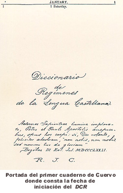
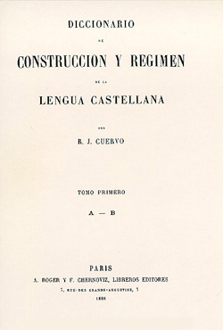
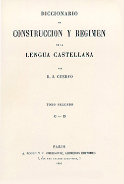
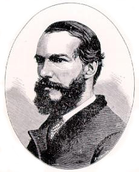
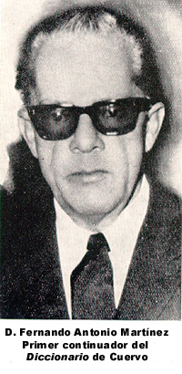
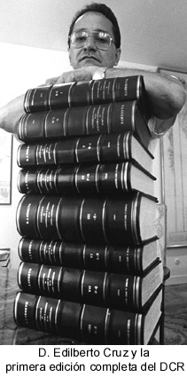
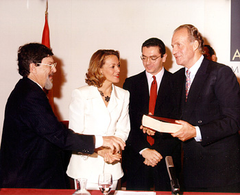
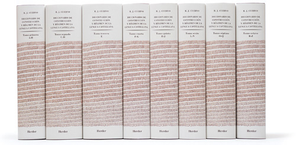

HISTORIA DEL DICCIONARIO DE CONSTRUCCIÓN Y RÉGIMEN (DCR)
1.3. Redacción e impresión de los dos primeros tomos
1.4. Interrupción del Diccionario
2.2. Creación del Instituto Caro y Cuervo
2.3. Consolidación y avance del proyecto
2.4. Reestructuración del departamento de lexicografía y agilización del proyecto
Cronología de Rufino José Cuervo y del DCR
Muchas fueron las vicisitudes y contratiempos por los que tuvo que pasar el Diccionario de construcción y régimen de Rufino José Cuervo en sus más de 120 años de elaboración. Para esbozar la historia de este Diccionario es necesario tratarla en varias etapas, bien definidas: la primera, correspondiente al periodo de iniciación y trabajo de Cuervo, que abarca desde 1872, año en que se inicia la obra, hasta 1896, cuando Cuervo suspende la redacción; la segunda, que ha sido denominada la continuación, se extiende desde 1896 hasta el momento que se finaliza la obra, en 1994.
1. PERÍODO DE CUERVO

Según Álvaro Porto Dapena, “El período de iniciación es el peor conocido y, consiguientemente, el que plantea mayores problemas, pues, contra lo que sería de desear, el maestro Cuervo no dejó escrita ninguna memoria o diario donde, además de un plan minucioso y detallado de su DCR, anotase los métodos seguidos en la elaboración de artículos, dificultades que tuvo que vencer, fechas de redacción, etc. Las únicas noticias de que a este respecto disponemos son las que pueden rastrearse en el propio Diccionario y, sobre todo, en los voluminosos epistolarios del maestro” (Porto, 1980:44).
R. J. Cuervo expone permanentemente sus preocupaciones lexicográficas en la mayoría de sus obras. Por ejemplo, en el Prólogo a la primera edición de Apuntaciones, sugiere el proyecto de llevar a cabo un diccionario completo de provincialismos de Colombia, con ayuda de otros estudiosos de la lengua y dependiendo de la acogida y aprobación de las Apuntaciones (Cuervo, 1955: 8). Al respecto anota Porto: “La aprobación, como es obvio, no se dejo esperar, y Cuervo, entusiasmado por la acogida de su librito, debió de intentar cumplir lo prometido, porque en una carta de su amigo y confidente E. Uricoechea, escrita en 1872, éste pregunta a nuestro filólogo si el diccionario de santafereñismos duerme aún” (Porto, 1980: 52-53). “El proyecto, –añade Porto– debía de permanecer todavía en pie en 1873, según se desprende de una carta escrita por Ruperto de J. Bucheli a Cuervo: "Pido al Todopoderoso que consume la obra [de las Apuntaciones] dándonos a luz el "Diccionario de provincialismos", cuyo privilegio tan bien merecido ha alcanzado del Gobierno" (Porto, 1980: 53, nota 17).
Pero el gran proyecto del filólogo colombiano era una obra mucho más ambiciosa. “Se trataba de un diccionario general que contemplase el léxico común del español, apoyase con citas de los clásicos todas las acepciones de cada vocablo, al modo del Diccionario de Autoridades, ya anticuado entonces, y, finalmente, que estudiase las etimologías a la luz de los modernos principios de la lingüística” (Porto, 1980, 53). Para esto buscó la colaboración de su amigo Venancio González Manrique, quien, según F. A. Martínez, “poseía un talento superior y dotes de verdadero filólogo. Además de conocer a fondo la literatura española, era un verdadero poliglota: llegó a poseer el alemán, el inglés (había estudiado en los Estados Unidos), el francés, el italiano y el portugués, aparte de las lenguas clásicas y el árabe” (Martínez y Torres, 1954: 83-84). El proyecto de escribir este diccionario surgió, según precisa el propio Cuervo en la introducción del DCR (Cuervo, 1954a, III, nota 2), en septiembre de l963, al lamentarse ambos amigos de la falta que hacia un diccionario castellano por el estilo de los de Webster y Bescherelle.
«Ambos, pues, pusieron manos a la obra repartiéndose a modo de ensayo dos letras: González Manrique se encargó de la L, y Cuervo de la O, y, cuando hubieron allegado suficiente material, iniciaron juntos la redacción de los correspondientes artículos. El resultado de este trabajo, que hubo de ser abandonado al parecer por ciertas diferencias surgidas entre sus autores, fue la Muestra de un diccionario de la lengua castellana, que apareció en 1871» (Porto, 1980: 54).
“Lo cierto es que la Muestra fue muy bien recibida, por cuanto superaba a todos los diccionarios castellanos de la época, incluso al propio Diccionario de Autoridades; pero, según confiesa el mismo Cuervo, carecía de un sólido fundamento científico acorde con los estudios lexicográficos de aquel entonces. El fundamento científico a que alude Cuervo es sin duda el aspecto histórico, deficiencia que junto con la imprecisión de las citas y alguno que otro detalle le hace notar su amigo E. Uricoechea. Vista, por lo demás, desde la perspectiva lingüística actual, la Muestra adolecía del defecto –imputable asimismo al Diccionario de Autoridades– de querer registrar los usos modernos del léxico basándose indiscriminadamente en textos procedentes de cualquier época del idioma, especialmente a partir del siglo XV” (Porto, 1980:56). Su gran amigo E. Uricoechea, al ver en Madrid un ejemplar de la Muestra, propiedad de Hartzenbusch, le anima a proseguir el trabajo iniciado, pero el sabio bogotano había decidido ya no proseguir la obra.
Siempre se ha tratado de establecer alguna relación entre el DCR y la Muestra de un diccionario. Según afirma Cuervo en el Prólogo del DCR, “en 1872 puso el autor mano en esta obra [El Diccionario] y queriendo ensayar su plan con los materiales acopiados por él para la otra [ La Muestra] vio que eran del todo insuficientes, como que no se habían recogido con igual designio. Echó de ver por otra parte que la letra O, que él compuso y única que ha examinado después, no tenía el fundamento científico que requiere el estado actual de la lexicografía, y ha relegado aquel ensayo entre las ignorantias juventutis. Ha parecido oportuno hacer aquí esta explicación para que las personas que hayan oído hablar de aquella empresa no padezcan error pensando que tiene conexión con el presente libro” (Cuervo, 1954a: III, nota, 2). Muchos dudan de esta afirmación. El profesor Porto Dapena da una opinión muy acertada y objetiva al respecto: “En mi opinión, no hay que negar que la primera tentativa lexicográfica de Cuervo tuvo que servirle en tres aspectos: como experiencia y adiestramiento en las técnicas lexicográficas, como demostración de la imposibilidad de llevar a término por sí solo un diccionario general de la lengua, y, por último, como garantía de que sus estudios lexicográficos serían bien acogidos. Bajo estos tres puntos de vista puede decirse que, efectivamente, la Muestra influyó en la elaboración del DCR. Ahora bien, si entre ambas obras lexicográficas pretende verse un influjo directo, que es a lo que Cuervo se refiere, tal relación es a todas luces inexistente. Y ello no sólo porque responde a unos presupuestos metodológicos diferentes, sino porque ni siquiera los materiales de la Muestra fueron en absoluto aprovechados– como sería de esperar– para la redacción del DCR” (Porto, 1980:59).
“Cómo y cuándo nació este proyecto en la mente de nuestro filólogo, resulta difícil de precisar. Según él mismo observa en el prólogo del DCR, parece que la idea surgió al darse cuenta de la frecuencia con que los hablantes de español nos encontramos con problemas acerca del régimen especial de ciertos verbos y partículas, problemas que ni las gramáticas ni los diccionarios comunes están en condiciones de resolver. Conocía, por otro lado, lo útiles que resultaban a este propósito las listas de palabras con régimen preposicional que la Academia había incluido en su Gramática, así como la observación de Bello en el sentido de que el régimen y construcción de ciertas palabras deberían ser estudiadas por los diccionarios” (Porto, 1980: 57).
También existe
la hipótesis, no descartable, de ningún modo, de que la idea de realizar un
diccionario de construcción y régimen surgió de la sugerencia hecha por su amigo
Uricoechea, cuando le comentaba en una de sus cartas (del 7 de febrero de 1872),
sobre la Muestra de un diccionario de la lengua castellana. Al respecto
decía Uricoechea: “Una cosa desearía ver en el [diccionario] de Uds. y es el
régimen de cada verbo: no conozco trabajo alguno sobre la materia en nuestra
lengua sino un mal apéndice a una gramática publicada por Hachette para uso de
franceses que desean aprender el castellano y creo que U. se habrá apercibido de
la ignorancia de muchos escritores en la materia. (AEC, 10:45).

En la portada del Cuaderno Mayor, como se conoce el libro donde Cuervo inicia la recolección del material y la selección de las palabras que conformarían el preliminarmente titulado Diccionario de Regímenes de la Lengua Castellana, consta la fecha de iniciación de los trabajos con la expresión latina: Aeternae Sapientiae lumine implorato, Petro et Paulo Apostolis auspiciabus, opus hoc coepi: si, Deo volente, feliciter absolvam, "non nobis, non nobis, sed nomen tuo da gloriam" Bogotae III kal. Jul. MDCCCLXXII (29 de junio de 1872). Este Cuaderno contiene la lista de las palabras seleccionadas y frente a cada una de ellas un conjunto de referencias codificadas, correspondientes a las obras y páginas donde aparecía el vocablo en cuestión; este procedimiento de recopilación del material fue una de las primeras tareas para conformar un corpus de textos lo suficientemente amplio.
Cuervo quiso tener este proyecto, en un comienzo en secreto, por lo que se deduce del apartado de la siguiente carta, enviada por su amigo Uricoechea: “No puede U. Imaginarse lo contento que me puso la antigua querencia [la elaboración del DCR]. ¡Adelante! ¡adelante! que todos lo aguardamos con ansia. No he dicho nada, ni a César, por seguir lo mandado, pero retozo de alegría y ya quisiera yo que todos lo supieran para que U. mismo tuviera una obligación moral con la palabra comprometida” (AEC, 10, 1976: l73). Para ese entonces, Cuervo ya había trazado las líneas generales de su obra, la cual constaría de seis tomos en folio, letra menuda y a cuatro columnas.
1.3 REDACCIÓN E
IMPRESIÓN DE LOS DOS PRIMEROS TOMOS

“Aunque don Rufino comienza en 1872 la elaboración de su Diccionario, es evidente que, como ocurre con toda obra lexicográfica, la redacción de artículos no se iniciaría hasta que el filólogo colombiano dispusiese de un corpus de textos lo suficientemente amplio” (Porto,1980:60). Tal como se afirmó anteriormente, en el Cuaderno Mayor, se encontraban consignadas las palabras y las referencias de las obras en que éstas se encontraban, las cuales habían sido leídas o despojadas por el mismo Cuervo. Añade al respecto el profesor Porto: “Este método tenía la ventaja de poder disponer en un tiempo relativamente corto de un corpus suficientemente extenso, pero, a su vez, ofrecía un grave inconveniente a la hora de llevar a cabo la redacción, pues obligaba a tener que manejar múltiples libros, localizar cada uno de los textos y, lo que sería más dificultoso, realizar la distribución de esos textos dentro de cada artículo” (Porto,1980:61). Uricoechea en una de sus cartas le daba algunos consejos sobre la metodología de trabajo en la organización de documentos y notas en papeletas que según don Ezequiel venía usándose para la elaboración de diccionarios: “Para evitarse trabajo con el Diccionario tiene que mandar hacer papeletas o cortar papel en tarjetas tan grandes como la mitad de esta página. Cada palabra se apunta sobre una tarjeta y cuanto haya referente a ella [la palabra]. Las tarjetas se tienen en una o unas cajas de cartón siempre en orden alfabético de modo que el borrador ya pueda servir para imprimir. Así es como se trabaja un diccionario: de otro modo el trabajo es casi interminable” (AEC, 10, 1976:200).
Para transcribir los ejemplos, Cuervo contó con la ayuda de un amanuense que copiaba cada una de los ejemplos o cédulas lexicográficas de manera independiente. Una de estas personas fue Marco Fidel Suárez, quien después llegaría a ser presidente de la República. Nunca se ha sabido quién fue su asistente de este trabajo en París. La labor de acopio debió de prolongarse hasta la interrupción definitiva de los trabajos. El material papeletizado por Cuervo llega hasta la palabra librar, mientras que el restante se reduce a meras referencias tomadas en un par de cuadernos.
Cuervo inicia la redacción del Diccionario en 1877. Respecto a la metodología para la redacción de los artículos, anota Porto: “Según se desprende del Prólogo del DCR, Cuervo debió de realizar varios ensayos de redacción antes de llegar a la fórmula definitivamente adoptada. Efectivamente, de acuerdo con la observación del propio maestro –aunque ello bien pudiera interpretarse como intento de justificar el carácter exhaustivo de cada artículo, pues no hay que olvidar su ideal de hacer un diccionario general y completo de la lengua–, parece que la primera idea que se le ocurrió fue basar la redacción exclusivamente en el aspecto central del Diccionario: las particularidades sintácticas en las que cada palabra podía ofrecer duda. Pero muy pronto se dio cuenta de que ese camino era errado y que, por lo tanto, lo mejor sería desarrollar cada artículo como si de un diccionario general se tratase. Sea ello como fuere, es perfectamente lógico y comprensible que nuestro filólogo ensayase, antes de emprender la redacción sistemática y definitiva, diversas fórmulas de estructuración y disposición de materiales” (Porto, 1980:61-62).
Antes de la publicación del tomo primero del DCR, Cuervo resolvió publicar un avance que tituló Prospecto del Diccionario de construcción y régimen de la lengua castellana, constituido por las ciento sesenta primeras páginas y que apareció en 1884. “A tal extremo llegaba el recelo de Cuervo en dar a conocer su obra –anota Porto Dapena– que, según confiesa –no sin cierta gracia– a su amigo y compadre L. M. Lleras, pensaba que si hacia una entrega de menos páginas podría traerle algún disgustillo: ‘Si yo mando un pliego de 8 págs. ó 16, no hay tonto que no lo lea, y como es forzoso que el tonto opine, es falta de caridad ponerlo en el caso de desbarrar. Si mando un buen pedazo, sólo mis amigos y personas competentes le arremeten, y ellos encaminan la opinión; perdonarán lo perdonable, y no armarán candela porque falte una coma. U. me dirá que cómo sé yo esas cosas. Pues cuando se publicó aquella muestra ahora años, se dijeron tantas lindezas, que quedé escamado. Un gran sabio dijo al verla: Bah, Calepino traducido! Un semisabio: Poner usos metafóricos, pf! así lleno yo dos diccionarios. Un comerciante: Mejor harían en irse a sembrar añil” (Porto, 1980: 64-65).
La publicación del Prospecto constituyó un rotundo éxito y “la critica favorable no se hizo esperar, hasta el punto de que la propia Real Academia Española envió a nuestro filólogo una carta de felicitación firmada por el entonces secretario de la Corporación don M. Tamayo y Baus” (Porto, 1980: 64). El texto de dicha carta es el siguiente:
“Enterada la Real Academia Española en su junta de anoche por el señor don Marcelino Menéndez y Pelayo y por el infrascrito de la suma importancia que, a no dudar, tendrá el Diccionario de construcción y régimen de la lengua castellana que V. S. ha empezado ya a publicar, acordó unánimemente y con íntimo júbilo darle muy fervorosos parabienes por una obra en que juntamente demuestra vasto saber y casi increíble perseverancia. Lo que en cumplimiento de grato y honroso deber, me apresuro a comunicar a V. S., cuya vida guarde Dios muchos años. Madrid, 17 de octubre de 1884. El Secretario, Manuel Tamayo y Baus” (AEC, 13, 1978: 136).
Esto le dio ánimos a Rufino J. para proseguir la publicación y elaboración de la obra. El primer tomo, correspondiente a las letras A y B, salió de la imprenta A. Roger y F. Chernoviz, dos años más tarde, en 1886, y a los siete años, en 1893, el segundo, de las letras C y D.

“A pesar de que no presentaban muchas erratas, porque los tipógrafos como eran franceses –y no sabían, por tanto, español– ponían mayor atención en el original, había que corregirlas seis o siete veces[...]. En cuanto a los originales que Cuervo entregaba a la imprenta, estaban constituidos por las propias papeletas utilizadas en la redacción, una vez clasificadas y ordenadas, hecho que se demuestra por las frecuentes indicaciones tipográficas que aparecen en ellas. Esto evitaba, lógicamente, por una parte el trabajo de transcribir nuevamente los textos –con los consiguientes riesgos de cometer erratas– y, por otra, la pérdida de tiempo” (Porto, 1980: 67).
Como era de esperar los dos tomos del DCR fueron objeto de múltiples comentarios, reseñas y juicios por parte de lingüistas y especialistas en la materia. Afirma Porto Dapena: “Bástenos con citar los nombres de lingüistas tan importantes como Schuchardt, Baist, J. Cornu, Tobler, Morel-Fatio, Foerster, Tschudi, quienes coinciden en señalar los grandes méritos de la obra del colombiano: su rigor científico, erudición y originalidad; y si encuentran algún defecto, éste no es otro que el no ser un diccionario general del español donde se contemplase, por tanto, la totalidad del vocabulario” (Porto, 1980: 67).

1.4. INTERRUPCIÓN DEL
DICCIONARIO

Rufino J. Cuervo dedicó la elaboración de su DCR unos veinticuatro años –desde 1872 a 1896–, es decir, más de la tercera parte de su vida. El número de páginas impresas del DCR escritas por el maestro asciende, sin contar el prólogo, a 2.314, y la cantidad de textos recogidos para la redacción de la obra debe ascender a más de cincuenta mil.
1896 se supone, es el año en el cual el maestro Cuervo abandonó los trabajos pertinentes a la continuación del Diccionario, como lo demuestra el siguiente texto tomado de una carta suya escrita a Benigno Barreto, fechada el 25 de octubre de 1902, en la cual afirma: "Creo, dije a U. que una casa editora me ha propuesto continuar por su cuenta la impresión del Diccionario y pagándome los derechos de autor, conforme se vaya viendo. Yo he aceptado en principio, pero advirtiendo que no se empezará el trabajo, sino cuando haya acabado las Apuntaciones (AEC, 3: 237).
Pero, aún no está plenamente demostrado que el ilustre filólogo, realmente después de este año, no haya adelantado algún tipo de trabajo para la continuación del DCR; es una de las conclusiones a las que muy juiciosamente ha llegado el profesor Schütz, uno de los más estudiosos de la vida y obra de don Rufino José Cuervo. La creencia de que hasta esta fecha el maestro Cuervo estuvo realizando trabajos para la continuación de este Diccionario, radica en que con la muerte de su hermano Ángel, aunque quiso, no pudo volver a ocuparse más de los trabajos del DCR, debido a que no solo perdió a un ser tan querido por él, sino su brazo derecho en lo concerniente a su apoyo y ayuda para resolver las dificultades y labores, tanto de carácter doméstico, como relacionadas con los trabajos investigativos que adelantaba don Rufino J. Cuervo. Después de la muerte de su hermano Ángel, tuvo que ocuparse personalmente de una infinidad de quehaceres rutinarios, como la búsqueda de libros en su inmensa biblioteca privada, la copia de artículos y apuntes y su respectiva organización en los ficheros, además, el tener que efectuar solo las fatigantes lecturas de las pruebas, normalmente varias veces antes de aprobarlas (Schütz, 1979: 573).
Respecto a la inquietud con frecuencia suscitada por quienes se han adentrado en el tema de averiguar cuál fue la causa principal de la interrupción de los trabajos para la continuación del Diccionario por parte de don Rufino J. Cuervo, se han tejido, hasta ahora, siete hipótesis, cuya discusión ha sido presentada exhaustivamente por el profesor Schütz (1979: 553-622) y que a continuación sintetizamos.
1.4.1. El poco interés despertado por el DCR en España. Su principal exponente ha sido Emilia Pardo Bazán, quien afirma que a Cuervo le descorazonó no sólo la convicción de tener que rehacer escrupulosamente los dos volúmenes publicados y revisar de nuevo todos los materiales, por la mala calidad de fuentes en que se había apoyado, sino también al observar que en España era donde menos interés había despertado la aparición de esta obra.
Esta hipótesis no tiene soporte válido porque, por una parte, no aparece ninguna afirmación hecha por el propio Cuervo en tal sentido; y por otra, no es cierto que en España la obra del Diccionario no hubiera despertado interés, pues en realidad muchos lingüistas, filólogos y literatos españoles felicitaron a Cuervo tan pronto como llegaron a conocer esta obra tan importante, entre ellos por ejemplo: Leopoldo Alas (Clarín), Antonio Ma. Alcover y Sureda, José Alemany Bolufer, Adolfo Bonilla y San Martín, Ramón de Campoamor, Julio Cejador y Frauca, Clemente Cortejón y Lucas, Alejandro Guichot y Sierra, José Gutiérrez de la Veqa., Juan Eugenio Hartzenbusch, Antonio Machado y Álvarez, Marcelino Meléndez y Pelayo, Ramón Menández Pidal, Miguel Mir, Gaspar Núñez de Arce, Francisco Rodríguez Marín, Rafael Salillas, José Ma. Sbarbi y Osuna, Miguel de Toro y Gómez, el Conde de la Viñaza y Elías Zerolo, –nombres que se deducen, entre otros, de la correspondencia sostenida entre estos autores y Cuervo.
Por otro lado, Cuervo también recibió reconocimiento de sus trabajos lexicográficos por parte de la Real Academia Española, de la que fue miembro correspondiente desde 1875. Además, según carta enviada por Cuervo a Miguel Antonio Caro, del 5 de noviembre de 1884, donde le transcribe una nota enviada por esta Academia para felicitarlo por el DCR, dice: “La Real Academia Española [...] acordó unánimemente y con íntimo júbilo darle muy fervorosos parabienes por una obra en que juntamente demuestra vasto saber y casi increíble perseverancia” (AEC, 10:289).
Acerca del gran interés que tuvo la Real Academia Española por el DCR, fue testigo don Antonio Gómez Restrepo, entonces Secretario de la Legación colombiana en Madrid; él en carta a don Rufino J. Cuervo, fechada el 14 de abril de 1893 le afirma: "Todos los académicos con quienes he hablado, me han preguntado con gran interés por el estado en que va la publicación del DCR, especialmente Tamayo y Baus; todos me han dicho más o menos lo mismo que el Duque de Rivas: «El Sr. Cuervo sabe más de filología que la Academia toda»” (AEC, 6:45).
Además, el nombre de Cuervo fue incluido en algunos diccionarios de autores españoles, como en el Diccionario biográfico (1875), de D. J. Cortés, donde se reconoce el DCR como el primer gran proyecto lexicográfico; también en el tomo V del Diccionario Enciclopédico Hispánico Americano (1890), de Montaner y Simón (28 vols. 1887-1910), se menciona el DCR como un "Verdadero monumento literario".
1.4.2. La falta de entusiasmo en Hispanoamérica. Esta es otra de las hipótesis sobre la posible causa principal de la suspensión de los trabajos para la terminación del DCR, por parte de Cuervo. Fue sustentada por el filólogo Pedro de Mujica, lector español en la Universidad de Berlín, quien refiriéndose a Julio Cejador al criticarle su obra Tesoro de la lengua castellana, publicada en 1908, le dice: “Don Julio, déjese de vascuencerías y armas al hombro, y concluya usted la magnífica obra de Cuervo, que él no ha de terminar por falta de entusiasmo en los hispanoamericanos y acaso por haberla hecho imprimir en el extranjero” (Fabo,1912:24).
Esta posible causa tampoco fue confirmada por Cuervo; además, porque no es cierto que en Hispanoamérica no se hubiera tenido entusiasmo por el DCR. Por el contrario, más bien llenó de orgullo a muchos autores que habían tenido que ver con la lingüística o campos afines, como se puede ver por ejemplo, en la correspondencia de Cuervo con personalidades tales como: Miguel Antonio Caro, Juan Manuel Dihígo y Mestre, Joaquín García Icazbalceta, Antonio Gómez Restrepo, José Manuel Marroquín, Rafael Ma. Merchán Pérez, Camilo Ortúzar, Marco Fidel Suárez, Manuel Sanguily, Rafael Uribe Uribe y Ezequiel Uricoechea, entre otros; además, poetas, novelistas y ensayistas destacados como Ismael Enrique Arciniegas, Julio Flórez, Max Grillo, Jorge Isaacs, Juan León Mera, Juan Montalvo, Ricardo Palma, Rafael Pombo, José Ma. Rivas Groot, José Enrique Rodó, José Asunción Silva, Francisco Soto y Calvo, Guillermo Valencia y José Ma. Vargas Vila.
1.4.3. Críticas injustas. Esta hipótesis, sustentada por Rodolfo Ragucci, sostiene que Cuervo abandonó la continuación del DCR debido a críticas injustas a esta obra. En efecto, hubo algunas reseñas que sin fundamento científico arremetieron contra esta obra monumental como fueran los casos de Pedro de Mujica y de don Juan Valera. El primero lanzó aseveraciones tan desproporcionadas que suscitaron desacuerdos por parte de filólogos y lingüistas de autoridad científica. El segundo fue tan celoso de la gran autoridad científica de Cuervo, que R. Foulché-Delbosc lo llamó: "El impertinente don Juan Tenorio de las letras españolas" (AEC, 11:174-175); este autor injustamente llegó a provocar excepcionalmente la ira de Cuervo y como algo raro dentro de la prudencia y humildad del ilustre colombiano quien, según testimonio de Foulché-Delbosc, tuvo que castigar la altanería de don Juan Valera mediante un artículo defensivo en el que entre otras cosas le dice: "A lo que parece –escribía entonces– no tiene el señor Valera más idea de lo que se habla en América que lo que le dan los libros de sus admiradores"; Foulché-Delbosc, además, allí echa en cara errores gramaticales en las respuestas de Valera (AEC,11:175).

Sin embargo, esta hipótesis no fue confirmada por el propio Cuervo; en cambio, se sabe que cuando el poeta colombiano Gómez Restrepo se quejaba de una censura inicua e injusta contra él, aparecida en Ecos perdidos, por parte de Max Grillo, Cuervo le respondió acerca de lo que él pensaba en estos casos de envidia en una carta escrita el 11 de octubre de 1893: "Entre las gentes de nuestra raza es necesario ser idiota para no tener enemigos. Yo no soy hombre de dar consejos; pero como U. es tan bueno, le doy el de no hacer caso alguno de esas mezquindades. En personas de su carácter y de su capacidad, el modo de contestar es trabajar sin descanso, adelantar y publicar cosas que afiancen la reputación adquirida, así cumplirá U. con dos deberes; uno derecho, que es multiplicar los talentos recibidos, y el otro, de carambola, digamos, que es castigar a los envidiosos”(AEC, 6:60).
Además, Cuervo, por el contrario, recibió muchísimas voces de aliento de filólogos tanto europeos como americanos, por ejemplo, en 1900, Ascoli lo designó públicamente como el “príncipe de filologi spagnnoli”; el hispanista alemán Gottfried Baist, muy conocido en esa época por sus críticas “inmisericordes” y de escasos elogios, resaltó el DCR como “die bedeutendste bisherige Leistung der spanische Sprachkunde". También le manifestaron a Cuervo su admiración en forma pública y privada, según testimonios escritos, por ejemplo: Jules Cornu, Ovidio Densusianu, Reinhard Dozy, Jhon Driscoll Fitzgerald, James Fitzmaurice-Kelly, Wendelin Foerster, Jeremias M. Ford, Raymond Foulché-Delbosc, Gustav Gröber, A.R. Goncalves Viana, Angelo de Gubernatis, Friedrich Hanssen, Adolf Hatzfeld, Rudolf Lenz, Charles M. Marden, Paul Meyer-Lübke, Alfred More-Fatio, Heinrich Morf, James A. H. Murray, Gaston Paris, Karl Pietsch, August Friedrich Pott, Hugo Schuchardt, Emilio Teza, Adolf Tobler, Johann Jakob von Tschudi, J. Leite de Vasconcellos y Karl Vollmöller, entre otros.
En consecuencia, de acuerdo con tales testimonios de reconocimiento, hay que concluir que Cuervo tampoco pudo abandonar la continuación del DCR por esta causa.
1.4.4. La muerte de su hermano Ángel. La hipótesis de que Cuervo abandonó la continuación del DCR por causa de la muerte de su hermano Ángel, ha sido apoyada por uno de los grandes estudiosos y conocedores de Cuervo, el colombiano Monseñor Mario Germán Romero, quien dice: "Mucho se ha especulado sobre las razones que tuvo [Cuervo] para no continuar el Diccionario de construcción y régimen, pero es seguro que la muerte de don Ángel le cortó las alas y ya no tuvo fuerzas para proseguir en obra tan agobiadora” (AEC, 7, LI-LII). Lo que don Ángel significaba como colaborador para el ilustre filólogo, se puede precisar con sus propias palabras: "Eran de padre los ejemplos consejos de discreción y prudencia; de madre, la solicitud con que posponía siempre su comodidad a la mía y velaba por mi salud y tranquilidad; de hermano, la generosidad y desinterés absoluto; de amigo, la franqueza y comunidad de sentimientos e ideas, la colaboración y ayuda en todas mis tareas; y de todo esto junto, el interés más vivo por cuanto pudiese acrecentar mi reputación y buen nombre” (Cuervo, 1954, t. 2:1669).
Sin embargo, aunque Cuervo reconoció en varias oportunidades lo mucho que le había afectado la muerte de su querido hermano Ángel, Don Rufino, por ejemplo, le manifestó a su amigo italiano Emilio Teza: "La muerte de mi querido hermano [...] me ha dejado tan quebrantado, que me falta el ánimo para escribir y para todo", pero agrega "No crea U. que me dejo abatir” (AEC, 1:258-259).
Al respecto, el profesor Schütz concluye diciendo que indudablemente las depresiones originadas por la muerte de don Ángel paralizaron la obra del DCR durante un tiempo y que, además, junto con la soledad fueron un factor negativo para su rendimiento científico; no obstante, la mucha falta que le hacía para adelantar las actividades de estudio y trabajo, solo contribuyó a hacer más penosas y lentas sus labores, con lo cual no se puede decir que la muerte de su hermano Ángel haya sido la causa decisiva para la no continuación del DCR; incluso, había que ver hasta qué punto pudo ser causa parcial” (Schütz, 1979: 572-573).
Si fuera cierto que tal acontecimiento lamentable para don Rufino hubiera sido la causa de su abandono a la continuación del DCR, no hubiera vuelto a escribir después de 1896; pero por el contrario –dice el profesor Schütz– siguió investigando, redactando y publicando artículos y libros, entre los que hay que destacar la 5a. edición de las Apuntaciones (1907) y la preparación de la 6a. edición de esta obra suya; también la preparación de varias ediciones de la Gramática de la lengua castellana, de don Andrés Bello, con notas de Cuervo (1907, 1908 y 1911); la segunda parte de Disquisiciones sobre antigua ortografía y pronunciación castellanas (publicación póstuma); y de la segunda versión de este estudio (también de publicación póstuma) y de Las segundas personas del plural en la conjugación castellana; Algunas antiguallas del habla hispanoamericana, publicados en 1908; los artículos sobre canoa, sabana, lindo, maná y maguer; la polémica con Juan Valera en El castellano de América; además de otros trabajos, tales como la edición de Cinco novelas ejemplares de Cervantes (1908), y también la preparación de una gran obra que fue publicada póstumamente por el Instituto Caro y Cuervo, bajo el nombre de Castellano popular y castellano literario.
1.4.5. La mala salud. Esta es otra hipótesis y fue mencionada por Rodolfo M. Ragucci, además de otros autores. Se cree que la causa principal para que Cuervo abandonara la continuación del DCR fue su mala salud. Tal suposición se hace debido a que don Rufino José desde temprana edad padeció de varias enfermedades. Él mismo le comentó a su amigo Teza en varias cartas escritas entre 1887 y 1907, cómo en aquel tiempo sufría de achaques, fiebres, catarros, reomatismos, insomnios, bronquitis, fatigas generales y otras indisposiciones (Tellechea, 1961: 602-610).
Pero, esta debilidad de salud no le afectó solo en esta época, sino desde antes de 1893 y, además, no le impidió a Cuervo la realización de una gran cantidad de estudios, ya mencionados. Por otra parte, Cuervo procuraba cuidar de su salud, por lo cual pasaba vacaciones en balnearios anualmente, ya fuera en la costa, o en la montaña con el fin de restablecerse (Shütz,1973:261-278). Además, como esas estadías de veraneos con frecuencia se extendían a tres meses, Cuervo cuando se sentía con fuerzas, aprovechaba para continuar con sus tareas intelectuales, inclusive con el estudio de libros científicos recién publicados.
Un dato adicional de importancia, es que el mismo Cuervo frente a García Calderón, cuando lo visitó en París, en 1909, le dio como razones parciales para su no terminación del DCR, además de su enfermedad, la soledad y la vejez (Fabo,1912:30). Sin embargo, Cuervo hizo esta afirmación dos años antes de su muerte, acaecida el 17 de julio de 1911, cuando en verdad ya se encontraba más enfermo y con una vejez prematura; pero hacia 1893, la situación era diferente: una época de mayor vigor físico, moral y de reconocimiento científico del DCR y cuando podía dedicarse por completo al trabajo de su continuación, pues él no tenía que realizar, como la mayoría de sus colegas, quehaceres docentes y administrativos. En tal caso, surge una inquietud que el profesor Schütz la expresa así: "La pregunta, entonces, no puede ser si Cuervo tenía, después de 1893 y 1896, la posibilidad física y moral para continuar su Diccionario, sino: ¿Por qué empleó sus fuerzas –reducidas– más bien a otros trabajos? y esto a sabiendas que el mundo científico esperaba la terminación de esta obra sensacional" (Schütz, 1979: 576-577).
1.4.6. Los defectos del material utilizado. Quizá esta es la hipótesis de mayor peso y la más citada frecuentemente como definitiva; se refiere a la constatación tardía de Cuervo de haber utilizado un acopio de materiales para el DCR que provenían de unas fuentes de mala calidad en su contenido por haber sido alteradas, lo cual le produjo a Cuervo una gran decepción y desánimo, hasta tal punto que decidió abandonar la continuación del DCR. Esta explicación fue sostenida como única por Ramón Menéndez Pidal y, luego, por Américo Castro, que además había sido mencionada en varias ocasiones por el propio Cuervo (Castro, 1924: 175).
Como se sabe, Cuervo para la elaboración de los dos primeros tomos (A-B y C-D) del DCR, se apoyó en textos defectuosos, especialmente en la colección Biblioteca de Autores Españoles, editada por Manuel Rivadeneira. Cuervo, siendo aún joven, reunió la mayor parte de los materiales para el DCR cuando vivía en Bogotá, donde no podía contar con el acceso a textos más fidedignos; en esta época, además, las ediciones científicas eran muy escasas, especialmente en el campo de la literatura española. A este respecto, Américo Castro dice: "Tampoco podríamos echarle demasiado en cara que hubiese tenido, allá en su tierra colombiana, confianza en la competencia de nuestros editores" (Castro, 1924: 175).
Sin embargo, desde su establecimiento en París, en 1882, Cuervo consultó las grandes bibliotecas de allí; consultó manuscritos, ediciones príncipes y facsimilares, adquirió obras muy confiables en bibliotecas privadas y también comparó obras críticas recién editadas. Precisamente, también allí pudo comparar las ediciones que había utilizado en Colombia con manuscritos y publicaciones originales encontrados en París, con lo cual llegó a decepcionarse profundamente de los materiales ya utilizados en el DCR. A partir de entonces, ya Cuervo no perdonó ni descuidos ni arbitrariedades o ignorancias, así fueran provenientes de sus amigos.
Desafortunadamente, las ediciones fidedignas que ahora tenía a la mano, tal vez le habían llegado tarde; aunque se sabe que Cuervo apenas corroboró tal problema, se dedicó a enmendar lo que pudo. Al respecto, el profesor Schütz dice: "Esto no excluye que Cuervo haya cotejado en parte y completado en París su material ya para el primer tomo. Esto es cierto por lo menos en cuanto el control de la colección de Rivadeneira [...]. No sabemos si en el siguiente pasaje de una carta suya a M. A. Caro, del 5 de agosto de 1883, [Cuervo] se refirió a material nuevo o a material ya reunido en Bogotá, que había añadido a su obra: ‘me he dedicado a rellenar la parte del Diccionario que tenía hecha; pero como los materiales acopiados eran casi el doble de los que sirvieron para la primera redacción, ha sido casi necesario hacerlo de nuevo’” (AEC,13:66). Pero no hay duda de que aprovechó libros adquiridos accesibles después de su instalación en Francia, en 1882” (Schütz, 1979: 586, nota 105).
Cuervo una vez llegó a París estableció contactos con eminentes hispanistas europeos quienes le confirmaron el poco valor de aquella colección editada por Rivadeneira, aspecto que ya sabía antes de la publicación del tomo I del DCR, como lo reconoce en este mismo tomo en el Prólogo: "[...] compruébense y esclarécense [las acepciones] con ejemplos, acompañados de la indicación precisa de la edición de que se toman, que es a menudo la Biblioteca de Autores Españoles de Rivadeneira, no tanto en razón de su mérito (que en ocasiones es bien escaso) como en atención a lo accesible que es a toda suerte de lectores” (Cuervo, 1953: LIII).
Pero algo que hace difícil de aceptar que esta fuese la verdadera causa para que Cuervo abandonara la continuación del DCR, es el hecho de que no solo se convenció de tal problema en relación con la poca confiabilidad de los materiales, estando en París, sino que ya se había dado cuenta nueve años antes de la publicación del tomo I del Diccionario, cuando aún se encontraba en Bogotá; pues su amigo Ezequiel Uricoechea, desde París le había advertido, a través de una carta del 5 de octubre de 1877: "Tenga cuidado con la edición Cervantes por Rivadeneira; yo la he hallado defectuosa y, según entiendo, otros también” (AEC, 10:196).
Por consiguiente, si el maestro Cuervo siguió utilizando con cierto cuidado esta colección y otras publicaciones deficientes, es quizá porque en aquella época no podía contar con ediciones críticas, porque no creyó que este problema invalidara la naturaleza de su obra; además, porque el DCR no se apoya en un solo ejemplo, sino en muchísimos; así lo acepta don Ramón Menández Pidal, según el Padre Félix Restrepo: "El mismo Menéndez Pidal, reconoce que el defecto de la Biblioteca de Autores Españoles de Rivadeneira, no era razón suficiente para que Cuervo abandonara su trabajo, pues es evidente que en la inmensa mayoría de casos las ediciones son correctas, y que un uso gramatical, confirmado con docenas y a veces con centenares de ejemplos, no queda desvirtuado con suponer que alguno que otro de ellos no sea legítimo" (Restrepo, 1945:431-432). Además, esta convicción en Cuervo es lo que lo lleva a continuar el tomo III, como lo demuestran 52 monografías dejadas, una serie de ejemplos manuscritos por él mismo hasta la palabra Librar, más anotaciones numerosas sobre ejemplos hasta palabras de la Z escritas en unos cuadernillos, las cuales posteriormente fueron descifradas por el Instituto Caro y Cuervo, dando lugar a 23.119 ejemplos más, para completar un total de 66.119 papeletas del trabajo dejadas por Cuervo para el tomo III del DCR.
En conclusión, siguiendo al profesar Schütz: “Parece paradójico que Cuervo de pronto haya abandonado en 1893 su empresa lexicográfica por hechos que le eran conocidos desde hacía ya 16 años” (Schütz, 1979: 590), y más adelante: “sería humanamente incomprensible que Cuervo, después de tantos esfuerzos, hubiera tomado en forma abrupta tal decisión despiadada [...]” (Schütz, 1979: 595).
Además, se tienen indicios de que Cuervo después de 1893, aún pensaba continuar el DCR, según carta enviada por él a lgnacio Gutiérrez Ponce, el 20 de enero de 1895: “El 3er. tomo del Diccionario no ha empezado a imprimirse, porque se han ofrecido varios tropiezos, uno de ellos el estar de malas con los editores por arreglo de cuentas; tuve que buscar abogado; gracias a esto mi haber se ha duplicado, pero todavía no se ha concluido la cuestión después de un año. Me causa horror meterme con otros” (AEC,5:229). Y en 1902, a propósito de la Segunda Conferencia Internacional Panamericana, celebrada en México, Cuervo en carta que le envía desde París a su amigo Benigno Barreto, deja entrever que aún podría dedicarse a continuar el DCR, hasta donde se lo permitieran sus fuerzas: “Si llega el caso de que para comenzar se me compre el número proporcional de los 2 tomos ya publicados (como es razonable), me pondré a trabajar [en la continuación del Diccionario] hasta donde alcancen mis fuerzas para responder a estímulo tan honroso" (AEC, 3: 229).
Desafortunadamente, Cuervo cambió de parecer cuando le llegó el texto oficial de la resolución, debido a unas afirmaciones, que le desconcertaron por no ser ciertas, entre ellas, que los tomos restantes ya estaban listos, la cual no era cierta, y también por el ofrecimiento pecuniario, aspectos que han debido serle consultados primero antes de producir tal resolución. Este desagrado también lo manifestó Cuervo a Benigno Barreto en carta del 25 de marzo de 1902, y de paso confirma que sí estaba dispuesto a volver trabajar en el DCR: “Hoy que he recibido el texto oficial, le diré que fue una farsa [...] se había votado una suscripción, pensé que pudiera ser cosa aceptable, y me decidí a trabajar, por supuesto si lo que me propusieran era justo y decoroso. Ahora resulta que en el texto aparece que yo he estado en parlamentos, que mi obra está completa y lista para la impresión, que yo la regalo y me ofrezco a cuidar gratuitamente la impresión. Ya calculará U. el disgusto que esto me ha causado” (AEC, 3: 231).
1.4.7. Problemas económicos. Si las anteriores hipótesis son descartadas como la causa principal para la no continuación del DCR por parte de Cuervo, entonces, ¿cuál fue? Esta pregunta, sin embargo, no implica que algunas de las explicaciones antes mencionadas, no hayan influido negativamente, de alguna manera, en el ilustre y sabio filólogo.
Una primera respuesta, la ha dado el profesor alemán Günther Schütz. Según esta hipótesis, la causa principal de que Cuervo no pudiera continuar el DCR fue su penuria económica, a pesar de sus anhelos; esta explicación es seguida por el profesor Porto Dapena (1980: 72), uno de los continuadores de este Diccionario, y es la que también nos parece más probable, por ahora, si se tienen en cuenta las argumentaciones, ya dadas para no aceptar las anteriores hipótesis, más las razones que son presentadas a favor de esta última.
De acuerdo con el profesor Schütz, la falta de recursos económicos como causa principal para la no continuación del DCR, es una explicación que puede ser interpretada en dos sentidos. Uno, como el no contar con el apoyo financiero para la elaboración y publicación de los tomos siguientes al tomo II, bien sea porque las editoriales no se comprometieran, o si aceptaran, entonces, ofrecían una remuneración inconsiderada e injusta con su autor, quien posiblemente ya no contaba con muchos ahorros; el otro aspecto, pudo ser la situación económica difícil que empezó a sufrir nuestro gran filólogo, a partir posiblemente de 1896 o 1897.
En cuanto al primer sentido de interpretación, sabemos que Cuervo en 1893 se encontraba preparando los materiales del tomo III, según carta enviada por él a Emilio Teza, el 3 de diciembre de dicho año. Más tarde, por carta que Cuervo le escribió a Benigno Barreto, el 25 de febrero de 1902, a propósito del apoyo económico que los miembros de la Segunda Conferencia Internacional celebrada en México (finales de 1901 y comienzos de 1902) quisieron ofrecer a Cuervo para la publicación del DCR; él cuando recibe la noticia no oficial, comunicada por el Secretario de Relaciones Exteriores de México, Ignacio Mariscal, se alegra pero dice que aún es necesario aguardar que se le precisen algunos datos, relacionados con el aspecto económico: “A U. no se oculta que es menester aguardar que se precisen algunos puntos y ver si lo más indispensable, que es la cuestión pecuniaria, se realiza tan fácilmente como lo supone el señor Mariscal” (AEC,3: 229).
En este mismo año, el 25 de octubre, Cuervo le cuenta también a Barreto que aceptó la propuesta de una editorial –no se sabe cuál– que estaba interesada en la impresión de los tomos pendientes del DCR. “Creo dije a U. que una casa editora ha propuesto continuar por su cuenta la impresión del Diccionario y pagándome los derechos de autor conforme se vaya viendo. Yo he aceptado en principio pero advirtiendo que no empezará el trabajo sino cuando haya acabado las Apuntaciones” (AEC, 3:237).
En cuanto al segundo aspecto de interpretación de esta hipótesis, acerca de las dificultades económicas por las que empezó a sufrir Cuervo, a partir de 1896 o 1897, hay bases suficientes como para llegar a creer que tal situación se dio realmente en el ilustre filólogo. Cuervo deja ver cuál es su circunstancia económica hacia 1900, pues el 6 de septiembre de 1902 le escribió a Benigno Barreto una carta desde Yport en la cual le dice: “De algún tiempo a esta parte he ido cercenando mis gastos lo más que puedo: hará unos dos años que no tomo un carruaje de plaza (la carrera cuesta tres reales y medio); en verano voy siempre a lo alto de los ómnibus que cuesta la mitad que en el interior, y cuando es posible prefiero los vapores del Sena, que cuestan menos para lo cual ando a pie en ida y vuelta unos veinte minutos. Ahora estoy en un hotel de cinco francos por día, cuando el mejor del lugar cuesta siete. En los gastos de la casa, mi criada es un modelo de economía y previsión y hace mucho más de lo que sus fuerzas permiten. El año entrante, si Dios me da vida, buscaré casa más barata aún, yéndome de París, si no hallo otro remedio” (AEC,3: 235). Esa mudanza efectivamente la realizó a fines de marzo de 1903; Cuervo se trasladó de la rue Largilliére, 2, donde había estado durante seis años, a la Rue de Siam 18. Lo cual confirma en parte que Cuervo debió obtener algún dinero, como se verá luego ante su propósito de regresar a Colombia.
En 1901, por una carta que escribió a su amigo Benigno Barreto, el 8 de octubre, sabemos que tenía preocupación por sus gastos de sostenimiento y deja entrever que antes era diferente: “Espero que Dios me hará el beneficio de permitirme trabajar para comer, cuando antes acaso sólo he pensado en satisfacer mis gustos y acaso mi vanidad [...]”(AEC,3:223). Con la expresión antes, parece que quiso referirse a aquella época de su estancia en París en la cual contaba con medios pecuniarios para sus gastos, de él y de su hermano Ángel, con los ahorros de la venta de la fábrica de cerveza que ellos habían montado en Bogotá y luego vendido para su sostenimiento en la “Ciudad Luz”, con el fin de dedicarse a las labores del DCR.
En 1902, Cuervo manifiesta a un amigo suyo de Medellín, el médico Eduardo Zuleta, sus deseos de regresar a Colombia, para radicarse en esa ciudad, debido a su estado de salud, pero sobre todo por el alto costo de vida, por eso en enero de 1902, le escribe para pedirle detalles sobre el costo de vida en la capital antioqueña, carta que luego este médico le contesta el 9 de abril del mismo año, en la que le da una serie de datos y de paso le dice: “Medellín entero le recibirá a U. con los brazos abiertos” (AEC, 5:259-260).
En este mismo año, Cuervo escribió a Benigno Barreto, el 25 de febrero y le cuenta, “Como ya dije a U. tengo mi viaje para Colombia determinado la fecha, Dios mediante, será para abril de 1903, en que termina mi contrato de alquiler con el dueño de casa. Si de aquí a fines de este año no he recibido siquiera frs. 20.000, suspendo el viaje, porque con eso y lo que gastaría en él, podré aguardar a que las cosas sean en Colombia menos malas” (AEC, 3: 229-260).
Otro aspecto que confirma la restricción económica de Cuervo después de 1896, es el verse obligado a dedicarse a labores de publicación de estudios suyos que tenían demanda en el mercado de los libros, como fue el caso de las Apuntaciones, una obra que tuvo mucha acogida en el público, por lo cual se agotaban pronto sus ediciones, lo cual le proporcionaba algún beneficio económico, como para comer, pero nada más; así se lo hizo saber a Benigno Barreto en su carta del 8 de octubre de 1901: “Pienso dedicar todos los ratos en que pueda trabajar, a las Apuntaciones, por las cuales tengo una propuesta, que para las circunstancias es ventajosa. Espero que Dios me hará el beneficio de permitirme trabajar para comer” (AEC, 3: 223). Esta determinación de dedicarse solo a las Apuntaciones, desde luego resultó inconveniente para la continuación del DCR. La 4a. edición de las Apuntaciones había sido publicada en 1885, y sabemos por carta que Cuervo le envió a Rudolf Lenz, el 19 de octubre de 1895, que en este año ya se encontraba ocupado en las tareas preparativas de la 5a. edición.
¿Hasta cuándo Cuervo abandonó el propósito de continuar el DCR? Se puede llegar a suponer que fue entre 1908 y 1909, fecha en la cual se dio cuenta que ya le era imposible terminarlo. Esto lo sabemos por los siguientes comentarios hechos por él:
- En una carta que le escribió a don Rafael Pombo, el 25 de junio de 1908 le dice: “Estando entre mis libros, no puedo dejar de revolverlos; pero imposibilitado para seguir los trabajos empezados antes, a ratos he acabado de sacar un libro el resumen del catálogo de los empastados que en largos años he ido haciendo en papeletas” (AEC, 7:354).
- En 1909, Cuervo dijo a García Calderón: “Tengo escrúpulos de vieja [...]. Es algo morboso que me impide escribir. He reunido muchos materiales, pero encuentro siempre que algo falta a las afirmaciones más sólidas para ser científicas, que el saber cuanto es más intenso, es también más tímido y lento. Para escribir una nota empleo meses. Así el Diccionario quedará inconcluso”. Mi hermano Ángel me ayudaba. Hoy, solo, viejo y enfermo, no pienso en obra alguna de aliento” (Fabo, 1912, 30).
- Max Grillo cuenta: “En un día de marzo [1911] Cuervo mostrándole los estantes con las fichas para la continuación del Diccionario le comentó: “Yo no lo terminaré. Pero aquí quedan todos los materiales ordenados para que una persona aficionada a los estudios lingüísticos dirija algún día la publicación del Diccionario. Lego la obra a Bogotá en mi testamento” (Grillo, 1911:187).
En conclusión, de hecho se encuentran varios aspectos que influyeron negativamente para que el maestro Cuervo no pudiera concluir su monumental, obra del DCR, y que además fueron reconocidos por él mismo. Sin embargo, la causa principal, en el sentido de la más influyente en el estancamiento de tal proyecto, parece ser la falta de medios económicos necesarios, no solo para adelantar esta obra, sino para el sostenimiento de su autor, al tener que dedicarle todo su tiempo dentro de la intención de terminarla. Hubo intentos de ayuda para la continuación de esta genial obra, pero desafortunadamente no fueron atinados, tal vez porque no se alcanzó a comprender suficientemente la ardua tarea que implicaba, que, además, era sometida a la estricta exigencia científica de Cuervo. No obstante, Cuervo hasta casi sus últimos años de vida mantuvo la esperanza de por lo menos avanzar en la continuación del DCR, a pesar de los múltiples tropiezos, incluyendo su mal estado de salud.
Por último, dejemos que sea el profesor Schütz, a quien hemos estado siguiendo en este tema, quien nos concluya esta parte de la historia de la continuación del DCR: “En consecuencia, si [Cuervo] no pudo realizar su proyecto, ni siquiera en parte, se debió llanamente a la falta de los medios económicos y esta carencia, antes que nada, a la actitud intachable de Cuervo quien, a pesar de su mala situación y de su gran deseo de concluir la obra, se opuso a cualquier propuesta, aun benévola, que no satisficiera totalmente su agudo sentido de justicia y su irreductible exigencia de decoro. En última instancia, el Diccionario inacabado es el monumento acabado de una moral que subordinó la gloria a la honradez” (Schütz, 1979: 622).
A lo anterior podemos agregar que hoy, cuando ya se ha terminado por fin el DCR, se puede concluir que esta tarea, con los años que le quedaban al maestro Cuervo, después de 1893, año de la publicación del II tomo, y con su salud tan débil, difícilmente hubiera acabado esta monumental obra. El Instituto Caro y Cuervo logró terminar este Diccionario y publicarlo completamente en un poco más de medio siglo, gracias a que pudo contar con el concurso de muchas personas, de un Departamento de Lexicografía creado para tal fin, y desde la década de los setenta con los recursos tecnológicos; a esto hay que agregar el apoyo financiero y de infraestructura por parte del Estado colombiano, de varios organismos tanto nacionales como extranjeros, y también de mecenas particulares.
Podemos señalar cuatro etapas principales para comprender la historia de la continuación del DCR: Etapa de transición; creación del Instituto Caro y Cuervo; consolidación y avance del Proyecto; y reestructuración del Departamento de Lexicografía y agilización del Proyecto, etapa en la cual se termina el DCR con la publicación de toda la obra.
“Esta se reduce, exclusivamente a una serie de ayudas, proyectos y resoluciones tomados en particular o en común por los Gobiernos americanos para apoyar la continuación y difusión del DCR” (Porto, 1980: 69). Después de la muerte de Cuervo en 1911, fue la Sexta Conferencia Internacional Americana la que suscitó de nuevo el asunto del DCR; esto sucedió en la Habana, en 1928, gracias a la iniciativa que tuvo el representante de Panamá don Ricardo Alfaro. Allí se elaboró la Resolución del 15 de febrero de dicho año, según la cual, los países representados suscribían una suma total de $ 42.000 pesos oro para la edición completa de 1.200 ejemplares del DCR, y se encargaba a la Unión Panamericana para que efectuara las diligencias pertinentes a la recaudación, como también se recomendaba a esta entidad que promoviera los medios para asegurar con anticipación la mejor acogida a lingüistas de reconocida autoridad para que prosiguieran de manera científica la obra del DCR hasta su terminación. El texto de la Resolución fue enunciado así:
“La Sexta Conferencia Internacional Americana,
RESUELVE:
1. Los gobiernos que se enumeran a continuación suscriben la cantidad necesaria para la edición completa de mil doscientos ejemplares del Diccionario de construcción y régimen de la lengua castellana, compuesto por don Rufino J. Cuervo, suma que será aportada así:
Los gobiernos de Argentina, Colombia, Chile, Cuba, México y Perú contribuirán con la suma de $ 3.000 pesos oro, cada uno; y los gobiernos de Bolivia, Costa Rica, Ecuador, El Salvador, Guatemala, Honduras, Nicaragua, Panamá, Paraguay, República Dominicana, Uruguay y Venezuela contribuirán con la suma de $ 2.000 cada uno, la que forma un total de $ 42.000 pesos oro.
2. Encárguese a la Unión Panamericana de efectuar la recaudación de las sumas suscritas, y adelantar con cualquier personas particulares, empresas o entidades, de cualquier género, las gestiones necesarias para la publicación de la obra, quedando ampliamente facultada para celebrar toda clase de contratos o convenios, y para hacer pagos o anticipos de conformidad con ellos.
3. Autorízase a la Unión Panamericana para recibir las contribuciones que espontáneamente deseen hacer cualesquiera instituciones científicas o literarias de carácter privado de los Estados Unidos de América, El Brasil y Haití.
4. Efectuada la impresión, se repartirán los ejemplares en proporción al monto de las respectivas cuotas, sin perjuicio de que el contrato para la publicación asuma la forma de subvención a una casa impresora, caso en el cual podrá ésta dar la obra a la venta pública, por su propia cuenta, con la sola obligación de entregar a cada gobierno contribuyente un número limitado de ejemplares, que se acordará en el contrato.
5. Recomiéndase a la Unión Panamericana que promueva los medios de asegurar por anticipado la mejor acogida a lingüistas de reconocida pericia que intenten proseguir en forma científica la obra filológica de don Rufino J. Cuervo hasta su terminación.
Con el propósito de dar cumplimiento a la Resolución, el Director General de esta Conferencia Internacional, se puso en contacto con don Antonio Gómez Restrepo, con el fin de conocer el estado en que Cuervo había dejado el DCR, pues se sabía que desde antes de la Sexta Conferencia, estaba encargado por el gobierno colombiano de hacer gestiones en Europa para ver la posibilidad de publicar las obras del maestro Cuervo, en particular el Diccionario.
A propósito de esta consulta, don Antonio Gómez Restrepo daba contestación el 6 de febrero de 1930 desde Roma, haciendo saber que Cuervo, además de los dos tomos ya conocidos, lo único que había dejado eran cédulas léxicográficas hasta la letra L; en esta respuesta manifestaba, además, que ya había hecho contactos con el gramático español M. Toro y Gisbert, quien parecía que estaba dispuesto a continuar con el DCR, pero que el gobierno colombiano no había decidido concretar todavía ningún contrato con este gramático, aspecto que de hecho nunca llegó a decidir, lamentablemente (Bronx, 1949:113-117).
Sin embargo, la resolución emanada de la Sexta Conferencia no pudo producir ningún efecto favorable para la continuación del DCR; tal situación entonces dio lugar para que se volviera a tratar el tema en la Novena Conferencia Internacional Americana, celebrada en Bogotá en 1948, que comentaremos más adelante.
2.1.1. Creación del Instituto Rufino José Cuervo. En 1940, en el gobierno del Presidente Eduardo Santos, por iniciativa del Ministro de Educación, doctor Jorge Eliécer Gaitán, fue creado el Ateneo Nacional de Altos Estudios, mediante el Decreto 465 del 5 de marzo de dicho año, con carácter de institución oficial dependiente del Ministerio de Educación Nacional, pero con autonomía para su labor científica y organización interna. El propósito encomendado era el de fomentar los altos estudios y continuar la tradición científica colombiana; el doctor Gaitán en su informe ante el Congreso de la República expuso los motivos en los que se apoyó el gobierno para su creación, así:
“Con el objeto de fomentar los altos estudios y de continuar y mantener la tradición científica colombiana, representada por las investigaciones de la Expedición Botánica, los estudios y descubrimientos de Francisco José de Caldas, los trabajos de la Comisión Corográfica de Codazzi y de Ancízar; las especulaciones matemáticas de Julio Garavito y la obra filológica de Rufino José Cuervo, ha sido creado el Ateneo de Altos Estudios.
El Ateneo, en consecuencia, adelantará investigaciones en materias científicas, que abarcan una múltiple actividad: cuestiones relacionadas con las Ciencias Naturales, las Matemáticas, la Filología, Etnografía, Antropología y Arqueología. Para atender a ellos, organizará sus trabajos en secciones especializadas en cada una de estas ramas” (Ministerio de Educación Nacional, 1940:117).
Una de las secciones mencionadas, la correspondiente a Filología y lingüística, dio origen al Instituto Rufino José Cuervo, bajo la dirección del jesuíta, Padre Félix Restrepo, con la asesoría del profesor español don Pedro Urbano González de la Calle, en trabajos relacionados con la continuación del DCR. Dejemos que sea el mismo Padre Félix Restrepo quien nos resuma tal experiencia: "Reunidos, bajo el nombre, no oficial, de Instituto Rufino J. Cuervo, y en virtud de un contrato con el Gobierno Nacional, hemos trabajado desde entonces, en horas contratadas y por consiguiente con muy poca intensidad, el profesor español Pedro Urbano González de la Calle y yo, con la contribución de los señores Julián Motta Salas, Rafael Torres Quintero y Francisco Sánchez Arévalo, y con la desinteresada y gentilísima colaboración de la señora Cecilia Hernández de Mendoza” (Restrepo, 1945:2).
Los colaboradores del equipo de este Instituto centraron sus esfuerzos investigativos hacia la continuación del DCR y también hacia el estudio de los manuscritos de Cuervo; al respecto, el Padre Félix Restrepo dice: “Nuestros colaboradores han estudiado sistemáticamente varios autores clásicos, reuniendo varios ejemplos para la continuación del Diccionario de Cuervo y han preparado varias contribuciones de importancia para la lexicografía hispanoamericana. Yo, por mi parte, estudié los manuscritos de Cuervo y preparé el tomo de sus obras inéditas que acaba de verse a luz pública” (Restrepo, 1945:2).
El Instituto Rufino José Cuervo tuvo el mérito de sobresalir, por haber sido el único de todas las secciones del Ateneo que logró organización propia, pero sobre todo, unos resultados de investigación en torno al problema de la continuación del DCR, hasta tal punto que, sin lugar a duda, puede ser considerado como el embrión del Instituto Caro y Cuervo, no sólo por la experiencia y avance de los trabajos de continuación del DCR, sino también porque fue el mismo equipo de investigadores que logró poner en marcha el Instituto Caro y Cuervo, institución académica y científica que en buena hora nació para terminar la portentosa y monumental obra lexicográfica española del DCR y, además, para realizar también otros proyectos de gran importancia en los campos de la filología, de la lingüística y de la literatura.
2.2.
CREACIÓN DEL INSTITUTO CARO Y CUERVO

Mientras el equipo de investigadores del Instituto Rufino José Cuervo trabajaba intensamente en los ratos contratados por el gobierno, la Academia Colombiana de la Lengua tuvo la iniciativa de celebrar el centenario de dos grandes maestros del humanismo en Colombia: don Rufino José Cuervo y don Miguel Antonio Caro, por lo cual preparó un proyecto de ley que, con el apoyo de los ministros de Educación Nacional Guillermo Nanetti y Germán Arciniegas, del director de Extensión Cultural y Bellas Artes Darío Achury Valenzuela, de don Tomás Rueda Vargas, y con la acogida unánime de los senadores y representantes, dio lugar a la Ley 5a. de 1942, sancionada por el presidente Alfonso López Pumarejo como Ley de la República, en cuyo artículo 4, se crea el Instituto Caro y Cuervo para que continúe el DCR, como una manera muy especial para contribuir a la celebración del Centenario de esas dos ilustres figuras. Allí se le señala como objetivo la continuación del DCR, junto con otras tareas. La Ley 5a, respecto a la creación del Instituto Caro y Cuervo dice así:
LEY 5a. DE 1942
(agosto 25)
por la cual la Nación se asocia a la celebración del centenario de
Miguel Antonio Caro y Rufino José Cuervo.
El Congreso de Colombia
Decreta:
Artículo 1º. - Con ocasión del centenario de Miguel Antonio Caro y Rufino José Cuervo, la Nación honra la memoria de estos dos insignes colombianos, orgullo de las letras castellanas.
[...]
Artículo 4º. - Créase bajo la dependencia del Ateneo de Altos Estudios un Instituto denominado Instituto Caro y Cuervo, cuya fin será continuar el Diccionario de construcción y régimen de la lengua castellana y preparar la reedición crítica de las Disquisiciones filológicas de Cuervo, y cultivar y difundir los estudios filológicos. El funcionamiento de este instituto será reglamentado por el Ministerio de Educación Nacional.
Artículo 5º. - En el presupuesto de la próxima vigencia se apropiarán las partidas necesarias para el cumplimiento de esta Ley, y cada año se incluirán en el presupuesto las partidas necesarias para el sostenimiento del Instituto Caro y Cuervo.
Artículo 6º. - Esta Ley regirá desde su sanción.
Dada en Bogotá a diez y siete de agosto de mil novecientos cuarenta y dos.
El Presidente del Senado, Edmundo Vargas R. El Presidente de la Cámara de Representantes, Carlos Arango Vélez. El Secretario del Senado, José Umaña Bernal. El Secretario de la Cámara de Representantes, Jorge Uribe Márquez.
Órgano Ejecutivo. Bogotá, 25 de agosto de 1942.
Publíquese y ejecútese,
Alfonso López
El Ministro de Hacienda y Crédito Público,
Alfonso Araújo
El Ministro de Educación Nacional,
Germán Arciniegas
Luego, el 31 de marzo de 1944 fue publicado el Decreto Número 786, con el fin de reglamentar la Ley 5a. de 1942 y convertirla en realidad. Así, se establecía que a partir del 1º. de marzo empezaba a funcionar el Instituto bajo dependencia de la Sección de Extensión Cultural y Bellas Artes del Ministerio de Educación y tendría como finalidades: a) Continuar el Diccionario de construcción y régimen que dejó empezado el ilustre filólogo colombiano Rufino J. Cuervo, b) estudiar las lenguas y dialectos de las civilizaciones aborígenes de Colombia, y c) cultivar y difundir los estudios filológicos.
El Profesor-Director nombrado tendría como tareas preparar al equipo que entraría a trabajar en la continuación del DCR para que éste no decayera; además debía participar en la redacción del mismo. El equipo estaría conformado por un colaborador técnico, un Investigador de lingüística colombiana y tres auxiliares, escogidos por concurso.
El 24 de abril de 1944 fueron nombrados como Profesor Director del Instituto Caro y Cuervo el Padre Félix Restrepo, S.J., como colaborador técnico del Instituto, don Pedro Urbano González de la Calle, y como Investigador de lingüística colombiana, don Manuel José Casas Manrique.
Entre las principales necesidades urgentes que tenía el Instituto Caro y Cuervo para su funcionamiento, estaban el espacio y la consecución de investigadores. Para solucionar la primera, el Ministerio de Educación Nacional puso a disposición de este Organismo naciente un tramo de la Biblioteca Nacional; y para resolver la segunda, organizó un concurso, conforme al artículo 4º. del Decreto número 786 de 1944, dando como resultado la presentación de ocho candidatos, entre los que fueron escogidos los señores José Manuel Rivas Sacconi, Julián Motta Salas y Rafael Torres Quintero; posteriormente, se unieron a este grupo los señores Luis Flórez, Fernando Antonio Martínez, Francisco Sánchez Arévalo y doña Cecilia Hernández de Mendoza.
Ya conformado el equipo, en el mes de mayo de 1944, y con un plan previo de actividades, el Instituto inició labores, las cuales a comienzo fueran centradas en la continuación del DCR. En relación con esta tarea encomendada, se planteó entonces una pregunta inevitable: ¿Por dónde empezar? Su respuesta dio lugar a lo que enseguida mencionamos.
2.2.1. Primeras labores del Instituto Caro y Cuervo sobre la continuación del DCR. Los primeros esfuerzos fueron más bien de tanteo y de análisis, para encontrar el camino más adecuado y seguro, con el fin de realizar una tarea científica, sin que se tergiversaran los métodos de Cuervo, pero sobre todo, para que el DCR pudiera conservar su naturaleza tal cual como lo había concebido su autor. Fueron planteados, entonces, dos opciones para iniciar este compromiso. Por una parte: o bien publicar el material redactado por Cuervo, tal como lo había dejado, y que solo comprendía hasta el vocablo Empero, más los textos recogidos por él para otros artículos, pero sin someterlos a ninguna elaboración lexicográfica; o, por el contrario, seguir con la redacción de los artículos, de acuerdo con un plan previsto por el maestro Cuervo. Este primer equipo optó por la segunda alternativa, pero al mismo tiempo se tomó la decisión de ir publicando en el Boletín del Instituto el material dejado por Cuervo, sin elaborar y, luego, los primeros artículos redactados por el nuevo equipo (Porto, 1980: 81).
Pero esta decisión tomada más bien era como un plan trazado grosso modo, como un punto de partida, porque desde luego faltaba todavía concretar una metodología, que permitiera al equipo de colaboradores seguir un derrotero confiable y productivo. También faltaba por definir unos criterios orientadores que pudieran seguir en el proceso de la continuación del DCR. Las inquietudes iniciales fueron detectadas como dos problemas que debían ser resueltos: el primero, fue enunciado más o menos así: ¿Cuál fue el material dejado por Cuervo para la continuación del DCR? Este interrogante dio lugar a que el equipo de colaboradores se propusiera como tarea previa llevar a cabo una revisión analítica del material dejado por Cuervo para el Diccionario, lo cual permitiría no solo un conocimiento más exacto del estado de ese material, sino también descubrir otros problemas y vacíos que debían ser resueltos.
De la tarea de revisión de los materiales se encargó el propio director del Instituto, el Padre Félix Restrepo, con la colaboración del profesor Pedro Urbano González de la Calle, de lo cual surgió, por una parte, la publicación de las Obras inéditas de Cuervo (1944), bajo la responsabilidad del mismo presbítero jesuita; y por otra, el examen y estudio del cedulario lexicográfico, que permitió la revisión de los cincuenta y tres primeros artículos, ya redactados por Cuervo, desde la voz ea hasta la palabra empero, y después, el análisis del material perteneciente a los setenta artículos siguientes, y que comprendían desde el vocablo empezar hasta entre; esta segunda tarea de análisis la realizó el profesor Pedro Urbano González de la Calle, quien, a propósito de esta misión, señaló los siguientes pasos previos para la redacción de un artículo del DCR: a) concreción de un plan esquemático de redacción; b) un estudio sintético etimológico; y c) un juicio sobre la cantidad del material, para determinar si era suficiente o no.
Tales análisis permitieron llegar a una primera conclusión importante para la continuación del DCR: El material dejado por Cuervo, en su mayor parte era insuficiente para intentar una redacción, según parámetros seguidos en los dos primeros tomos de este Diccionario. Además, se encontró que Cuervo había dejado material en papeletas hasta la palabra librar, para el resto de vocablos de ahí en adelante, solo había dejado unos cuadernos con citas difíciles de interpretar por estar escritos en abreviaturas y siglas, las cuales por ser tomadas en su mayoría de la Biblioteca de Autores Españoles, no eran tan confiables.
Tales resultados permitieron señalar que, en relación con el material, había un panorama inmenso de trabajo por hacer. A propósito de tal situación, el P. Félix Restrepo afirmó: “La continuación del Diccionario de construcción y régimen es una ardua labor que presupone la lectura atenta de todos los clásicos de la lengua en sus diversas épocas para escoger en ellos los ejemplos que puedan servir para indicar los diversos usos a que según la diversidad del régimen se presta una misma palabra. Escogidos los ejemplos, es necesario transcribirlos y después clasificarlos” (Restrepo, 1945: 10). Con esta conclusión se indicaba una de las principales tareas para realizar en lo sucesivo, durante muchos años, labor que fue necesario desarrollar, inclusive hasta 1988; por esta experiencia tuvieron que pasar casi todos los primeros colaboradores del Instituto al vincularse a él; posteriormente, fue también tarea para los integrantes del Departamento de Lexicografía.
A propósito de este trabajo, en enero de 1945, el doctor José Manuel Rivas Sacconi, entonces Secretario General del Instituto y Director del Boletín, indicó el siguiente plan de tareas por realizar:
1. “Terminar la revisión del material inédito de Cuervo en relación con el Diccionario, y en el curso de esta revisión dejar clara constancia escrita de las lagunas encontradas.
2. Recolección de material, mediante lectura de autores y transcripción de ejemplos en papeletas lexicográficas.
3. Confrontar los ejemplos transcritos por Cuervo, especialmente de la colección de Rivadeneira, con el texto de las respectivas obras.
4. Tratar de descifrar, hasta donde sea posible, las referencias que se encuentran en los cuadernos de trabajo de Cuervo.
5. Elaborar la lista de autores y obras que deben ser estudiados teniendo como base la hecha por Cuervo.
6. Continuar la ordenación y redacción de los artículos referentes a palabras para las cuales existe material suficiente” (Ric, 1951: 3-4).
Un aspecto importante que permitió hacer ver que la continuación del DCR estaba en marcha bajo la responsabilidad del Instituto Caro y Cuervo, fue haber empezado a publicar los materiales que Cuervo dejó preparados con destino al tomo III, en el Boletín del Instituto Caro y Cuervo, en 1945. Al respecto el P. Félix Restrepo, quien en ese entonces hizo la presentación de este propósito, nos dice: “Estos materiales son de dos clases: En primer lugar hay 48 palabras, cuya redacción dejó el maestro terminada y lista para enviar a la imprenta. [...] Los lectores del Boletín del Instituto Caro y Cuervo tendrán pues en cada uno de los próximos números algunos pliegos con la continuación original de la obra de Cuervo”, y continúa: “la segunda clase de materiales que dejó preparados nuestro gran filólogo abarca desde la palabra empezar hasta la palabra librar, o sea un total de 702 palabras, para las cuales tenía ya el maestro ejemplos escogidos y pasados a sus respectivas papeletas” [...]. Hemos llegado pues a la conclusión [Don Pedro Urbano González de la Calle y el P. Félix Restrepo] de que estas papeletas desde la palabra empezar hasta la palabra librar, no bastan para redactar los respectivos artículos” (Restrepo, 1945: 429-430).
2.3.
CONSOLIDACIÓN Y AVANCE DEL PROYECTO

Esta etapa se caracteriza por haberse logrado en ella una afianzamiento en el avance de la continuación del DCR, manifestado en los primeros resultados investigativos, sobre todo, en cuanto a la redacción de nuevas monografías, acordes con los parámetros metodológicos fijados por Cuervo. Se pueden destacar los siguientes hechos: la creación del Departamento de Lexicografía y nombramiento del doctor Fernando Antonio Martínez como jefe de esta sección; la definición de unos criterios directrices; primera monografía redactada por la planta del Instituto Caro y Cuervo; la reedición de los dos primeros tomos del DCR; la aparición de los primeros fascículos del tomo III, y la colaboración del profesor Joan Corominas.
2.3.1. Creación del Departamento de Lexicografía. Con el fin de dar un mejor cumplimiento a las finalidades del Instituto, enunciadas en el artículo 2º del Decreto No.726 del 28 de febrero de 1947, la dirección institucional, bajo la responsabilidad del doctor José Manuel Rivas Sacconi, decidió crear dos secciones: la de Lexicografía y la de Dialectología, mediante la Resolución No 1 del 24 de agosto de 1949. Según esta disposición, “La sección de Lexicografía tendrá a su cargo principalmente los trabajos para la continuación del Diccionario de construcción y régimen de la lengua castellana, esto es el acopio y selección de los materiales y la redacción de las monografías correspondientes”, y más adelante: “La sección de Lexicografía estará integrada por el colaborador técnico del Instituto, dos auxiliares y dos segundos auxiliares”.
Posteriormente, por Resolución No 2 del 20 de octubre del mismo año fue designado el personal de dicha sección, quedando constituido así: el profesor Pedro Urbano González de la Calle, como Director: como auxiliares primeros, los investigadores Rafael Torres Quintero y Fernando Antonio Martínez; y como auxiliares segundos, los investigadores Jorge Páramo e Ismael Enrique Delgado Téllez.
La Resolución de nombramiento, ya mencionada, estipuló cuáles eran las respectivas misiones de los investigadores de la sección de Lexicografía así: “El colaborador técnico y los dos [primeros] auxiliares tendrán a su cargo la redacción de los artículos del Diccionario. Los proyectos de redacción elaborados por los auxiliares serán revisados y, si fuera el caso, completados por el colaborador técnico, antes de ser sometidos a la consideración del Director del Instituto para su aprobación definitiva”. De esta manera, también se indicaban unos pasos de procedimiento de supervisión para el caso de la redacción de las monografías.
Entre las tareas asignadas a la sección de Lexicografía mediante esta Resolución, se concretaba además: a) Fijar la lista definitiva de las palabras que debían quedar incluidas en el Diccionario y elaborar las normas a que debían ajustarse los lectores en su trabajo. b) Preparar la lista de autores y obras que debían ser estudiados y determinar las ediciones que debían ser utilizadas. c) Formar un fichero de las obras estudiadas en el cual se tuvieran en cuenta estos datos: nombre del autor, título de la obra, edición utilizada, sigla usada en las citas, nombre del lector y número de papeletas obtenidas.
Desafortunadamente, el equipo conformado muy pronto se desintegró, debido a que el Director de la Sección, el profesor Pedro Urbano González de la Calle, se retiró del Instituto para radicarse en México, y a los otros miembros del grupo les fueron asignadas otras tareas. Dada esta circunstancia, la dirección del Instituto vio la necesidad de asignar un nuevo Director de esta Sección, por lo cual mediante la Resolución Nº 5 del 20 de febrero de 1950 nombró al doctor Fernando Antonio Martínez como jefe del Departamento de Lexicografía, pero ya no pudo contar con los auxiliares que habían sido nombrados, por lo cual quedó prácticamente solo para desarrollar la continuación del DCR.

Una vez nombrado el doctor Martínez como director de la sección de Lexicografía, empezó a trabajar en varias tareas de adelanto del Diccionario. En 1958, él mismo, al referirse a este comienzo nos dice que desarrolló las siguientes tareas: a) Estableció una lista para determinar el número de autores utilizados por Cuervo en el Diccionario, sus obras y separadamente aquellas de carácter técnico y científico; b) identificó en su casi totalidad las siglas del cuaderno mayor de Cuervo y c) fijó una lista de las palabras que, según su criterio, debían formar parte del Diccionario.
2.3.2. Criterios de orientación para la continuación del DCR. Desde los comienzos de la continuación del DCR por parte del Instituto, ya se había visto la necesidad de establecer unas pautas de orientación para adelantar este Proyecto, en vista de que Cuervo no las había dejado escritas ni aclarados como para que posibles continuadores no tuvieran tropiezos. En consecuencia, en una reunión de la comisión lexicográfica llevada a cabo el 22 de noviembre de 1949, fue discutida una Propuesta sobre criterios, presentada por el doctor Fernando Antonio Martínez, la cual propició unas conclusiones sobre esta materia, que fueron aprobadas por dicha comisión. La propuesta presentaba cuatro puntos:
1. Criterios de publicación. Se determinó que tanto el material legado por Cuervo como el aportado por el Instituto fueran elaborados lexicográficamente, y en el momento de llevarlos a la imprenta se determinaría la forma de distinguirlos. Cabe anotar al respecto, que posteriormente se adoptó como fórmula indicar los materiales recogidos por el Instituto así: con el signo (+) los textos recogidos por el doctor Fernando Antonio Martínez, con el signo(x) los recogidos por el nuevo equipo a partir de 1973, y los precedidos con la sigla RAE los ejemplos tomados del fichero de la Real Academia Española; cuando se tratara de un artículo no previsto por Cuervo, su entrada debía marcarse por un asterisco (*).
2. Criterios de la recolección de materiales complementarios. Se determinó, de acuerdo con la propuesta del doctor Martínez, elaborar una lista A, con todos los autores y obras utilizados por Cuervo y una lista B, con los autores y obras no tenidas en cuenta por Cuervo tanto de autores españoles, como hispanoamericanos, y ediciones más fidedignas que las usadas por éste. También fue aprobada la formación de una lista de obras o monografías científico lingüísticas que se refirieran a problemas generales de lingüística o especiales de la sintaxis o particulares de la lexicografía.
3. Criterios de la ordenación y clasificación de los materiales. Se acordó continuar con: la averiguación del estado numérico de las cédulas lexicográficas existentes; el estado de la exposición monográfica y el estado de la investigación de las etimologías. A este respecto, se aprobó el sistema utilizado y seguido ya por el profesor Pedro Urbano González de la Calle y se recomendó proseguir con esta tarea.
4. Criterios de la redacción monográfica. Se decidió aprobar: la formación de esquemas de redacción con base en el material disponible; la realización de un estudio previo de las clasificaciones más generales elaboradas por Cuervo en lo ya publicado y conceder una mayor representación de los autores del español de América, por lo cual el director del Instituto recomendó pedir asesoría de expertos en literatura de los países hispanoamericanos. Al respecto, cabe anotar que el equipo de colaboradores del Departamento de Lexicografía, especialmente el que se formó después de 1973, actualizó la nómina de autores, no solo en relación con los hispanoamericanos, sino también de España, como se puede constatar en la ejemplificación presentada en la redacción de las monografías del DCR.
2.3.3. Primera monografía redactada por la planta del Instituto. Este acontecimiento fue muy particular y significativo dentro del proceso de la continuación del DCR, pues ya habían sido publicadas por esta Institución cuarenta y tres monografías en el Boletín, a partir de 1945, las cuales habían sido dejadas por Cuervo para el tomo III del Diccionario. Luego, el Instituto se encontró frente a unos materiales que no estaban ni completos, ni ordenados, pertenecientes a unas setecientas dos palabras, desde empezar hasta librar; por lo cual se tomó la decisión de afrontar la tarea de complemento, clasificación y redacción totales, contrario a lo que en principio se había anunciado: publicar en dicho Boletín las papeletas de tales voces con un mínimo de clasificación, reservándose para más adelante completar los materiales y luego presentar la redacción (Rivas, 1951: 475). Debido a esta decisión, en 1951, se pudo publicar la monografía empezar, ciñéndose fielmente a los criterios fijados por Cuervo, gracias a la labor investigativa desarrollada por el doctor Martínez y a un terreno ya abonado anteriormente, fruto de extensos y penosos estudios y ensayos previos adelantados por el Instituto Caro y Cuervo en años precedentes. En cuanto al mérito de este investigador, el doctor Rivas Sacconi dice: “Para que se mida el alcance de su tarea, baste decir que los ejemplos dejados por Cuervo para la palabra referida son setenta y siete, y que los nuevos que hubo necesidad de recoger son ciento once” (Rivas, 1951: 475). Además de esto, el doctor Martínez añadió toda la parte etimológica.
La publicación de la monografía empezar fue de gran importancia por varias razones: En primer lugar, demostró, en contra de un pesimismo que suponía la imposibilidad de continuar esta obra, en particular con la redacción respetando la naturaleza y rigurosidad científica dadas por su autor, de una vez por todas, que el Instituto Caro Cuervo sí podía cumplir con tan pesada y delicada responsabilidad ante el país y ante el mundo hispánico. Por otra parte, dio lugar a que uno de los más prestigiosos hispanistas franceses, el profesor Bernard Pottier, demostrara la aplicabilidad de los métodos de la lingüística estructural al campo de la lexicografía, precisamente valiéndose del Diccionario de construcción y régimen, con lo cual saltaba a la vista que este diccionario no tenía que temer nada, ni a ninguna publicación de su género, ni a la experiencia de los métodos más novedosos en la lingüística general. Por último, esta experiencia sirvió también para concretar los aspectos complejos, las innumerables dificultades y los riesgos que significaban el desarrollo de tamaña empresa dentro de los parámetros señalados por Cuervo. A este respecto, nos dice el doctor Martínez, “No vamos a ponderar la complejidad de la tarea que nos hemos impuesto, ni sus dificultades, ni sus riesgos innumerables que acechan al lexicógrafo al proseguir una obra de la naturaleza de la presente; bástenos tan sólo confesar que hemos procedido con un celoso respeto de la memoria de Cuervo, que hemos procurado ceñirnos a los criterios que él impuso en la lexicografía y tratado de asimilarnos los principios y métodos con los que él concibió y desarrolló su monumental Diccionario” (Martínez, 1951:2).
En la publicación de esta monografía como apareció en el Boletín, encontramos dos partes, ambas encabezadas con la palabra empezar; en la primera los textos están ordenados cronológicamente, de lo más moderno a lo más antiguo, y corresponden al material dejado por Cuervo, en un total equivalente a setenta y siete cédulas, y sin la parte etimológica que deben llevar todas las monografías, de acuerdo con el plan trazado por Cuervo; esto con el fin de comprobar que el material que alcanzó a dejar el autor del Diccionario era realmente insuficiente para poder establecer los distintos usos del verbo; y también para guardar cierta uniformidad léxica en relación con las demás palabras. Luego, aparece bajo el mismo encabezamiento con la palabra empezar, el material de Cuervo, pero completado, clasificado y redactado.
2.3.4. Reedición de los tomos I y II del Diccionario de Cuervo. En vista de que los dos tomos del DCR publicados en París por A. Roger y F. Chernoviz, Libreros Editores, se habían agotado, el Instituto en 1951, de común acuerdo con el Gobierno Nacional de Colombia, se propuso hacer una reedición facsimilar de estos dos tomos, por lo cual solicitó presupuestos de costos a casas editoriales acreditadas de México, Alemania, Italia y otros países europeos, que estuvieran en capacidad de llevar a cabo este trabajo. Esta labor la dirigió el Instituto Caro y Cuervo y le fue confiada a los Talleres editoriales de Herder & Co. en Friburgo de Brisgovia; la reedición del tomo I salió en 1953 y la del tomo II en 1954.
En la presentación del tomo I, aparecen señaladas las justificaciones que en realidad tuvo el Instituto para llevar a cabo esta clase de labor, las cuales fueron, principalmente, tres:
a) El hecho de haberse agotado la primera edición por lo cual se había hecho difícil su consulta para muchos estudiosos e investigadores de la filología hispánica, que se lamentaban de la imposibilidad de consulta de esta obra por encontrarse anotada.
b) Al pensar en nuevos usuarios, había que cumplir con una etapa previa de los trabajos de continuación de toda la obra en que estaba empeñado el Instituto Caro y Cuervo. Para muchas personas, al interesarse en los resultados de la continuación del DCR, era lógico que quisieran tener los dos primeros tomos, por lo cual había que prever tal solicitud.
c) Al presentar al público esta reedición, sin variaciones ni alteraciones de ningún género, se ponía de manifiesto que los trabajos de continuación del DCR por parte del Instituto, no se omitiría ningún esfuerzo para que el plan y método con que lo concibió su autor se iba a sostener rigurosamente, por lo menos hasta donde lo permitía la índole de una labor que busca aproximarse fielmente a los principios y resultados al propio ideal del maestro Cuervo.
2.3.5. Firma de acuerdo con la Unión Panamericana. Cuando el Instituto Caro y Cuervo en 1942 se hizo cargo de la tarea de la continuación del DCR, ya se contaba con dos resoluciones de apoyo para llevar a cabo esta labor, por parte de las Conferencias Internacionales Americanas (México, 1901-1902; y la Habana, 1928). Tal estado de cosas influyó para que la Novena Conferencia Internacional Americana, celebrada en 1948 en Bogotá, se reiterara el anhelo y propósito de impulsar con auxilios la continuación y publicación del Diccionario de Cuervo, por lo cual se encargó a la Unión Panamericana para que procediera a dar cumplimiento inmediato a la Resolución de la Habana en su totalidad; por lo cual se concretó la Resolución 42, en la que se coincidió en “reiterar los anhelos y propósitos expresados en la Resolución suscrita en la Habana sobre auxilio a la edición del Diccionario de construcción y régimen de la lengua castellana compuesto por don Rufino José Cuervo”, como también “expresar su voluntad de que la Unión Panamericana en ejercicio de las amplias facultades que se le concedieron por medio de la referida Resolución, proceda a darle cumplimiento en todas sus partes, a fin de que a la mayor brevedad posible pueda el mundo hispánico recoger y disfrutar el invaluable patrimonio lingüístico y cultural que representa lo que quedó escrito de aquella monumental obra”.
Como consecuencia de esta última Resolución, la Organización de los Estados Americanos (OEA) creó la Comisión del Diccionario de Cuervo, en el seno de la Unión Panamericana, el 15 de diciembre de 1949, integrada por Colombia, Honduras, México, Panamá, Paraguay y Venezuela, con la misión de ocuparse de todo lo relativo a la publicación de tan importante obra.
La anterior circunstancia fue entonces aprovechada para suscitar una ayuda efectiva para la continuación del DCR, por lo cual el gobierno colombiano tramitó una invitación a la OEA para que uno de los miembros de aquella comisión visitara al Instituto Caro y Cuervo en Bogotá, para establecer contacto con sus directivos, en relación con la empresa de la continuación del DCR. A raíz de esta invitación, el Consejo de la OEA en su sesión del 16 de marzo de 1951 encomendó al embajador doctor Rafael Heliodoro Valle que visitara el Instituto Caro y Cuervo con el propósito de cerciorarse del estado en que se encontraban los trabajos de la continuación del Diccionario y de tratar con sus autoridades el mejor modo de coordinar esfuerzos para llevar a cabo lo dispuesto por las Conferencias Interamericanas.
La misión del doctor Rafael Heliodoro Valle dio lugar a que el Consejo Interamericano Cultural (México,1951) recomendara que el Consejo de la Organización de la OEA autorízase al Secretario General para que formalizara un acuerdo con el Instituto Caro Cuervo, mediante el cual se activase el fondo Interamericano de U.S. $42.000.oo, dispuesto por la Sexta Conferencia Internacional Americana (celebrada en la Habana, 1928), con el ánimo de que el Instituto Caro y Cuervo pudiera contratar los servicios de filólogos de prestigio reconocido para participar en los trabajos de la gran obra lexicográfica.
En virtud del adelanto de tales gestiones, la OEA, en 1956 decidió, de una vez por todas, poner en marcha la contribución ofrecida a la obra del Diccionario de construcción y régimen, por lo cual se firmó un acuerdo con el Instituto Caro y Cuervo en Bogotá, el 29 de noviembre de 1956, entre el doctor José A. Mora (Secretario General de la OEA), y por parte del gobierno colombiano el doctor José Manuel Rivas Sacconi como Ministro de Relaciones Exteriores, la señora Josefina Valencia de Hubach como Ministra de Educación, y el doctor Fernando Antonio Martínez en representación del Instituto Caro y Cuervo como director encargado. Posteriormente se consideró la conveniencia de contratar un solo filólogo para que actuara como asesor del Instituto Caro y Cuervo en los trabajos de prosecución del Diccionario.
Como consecuencia de tal acuerdo, se produjo la contratación del profesor Joan Corominas por el término de dos años, prorrogables por períodos iguales, según lo estimaran las partes interesadas. De paso vale la pena anotar que el Instituto Caro y Cuervo desde 1948, venía gestionando la contratación de un especialista en el campo de la romanística, y más específicamente en el campo de la lexicografía; de acuerdo con tal inquietud, ya había hecha invitaciones a lingüistas muy destacados, como por ejemplo, W. von Wartburg, O. Deutsmann, R. Lapesa Melgar, y el mismo J. Corominas, sin embargo, por varias razones el Instituto no había logrado contar con su colaboración.
A propósito del profesor Joan Corominas, el Instituto Caro y Cuervo había recibido la sugerencia de su nombre por parte del maestro de filología española, don Ramón Menéndez Pidal, quien lo recomendó de manera muy enfática, en carta dirigida al Instituto Caro y Cuervo; también lo recomendaron don Amado Alonso, Leo Spitzer, y Américo Castro. En 1948, el entonces Secretario General del Instituto, doctor José Manuel Rivas Sacconi, viajó a Chicago donde se encontraba el profesor Corominas, para explorar su disposición a trabajar en la continuación del DCR, pero en aquellos días se hallaba totalmente ocupado en las tareas de adelanto de su monumental Diccionario crítico y etimológico de la lengua castellana, por lo cual no fue posible su vinculación formal al Instituto. Pero, en 1957, las circunstancias se presentaron más favorables y el Instituto Caro y Cuervo se encontraba, además, con el apoyo decidido del Consejo de la OEA, cuyos representantes estuvieron de acuerdo con la contratación del profesor Corominas.
En el mismo acuerdo, ya mencionado, entre el Consejo de la OEA y el Gobierno colombiano, se comprometieron los servicios de este lexicógrafo español, e inclusive se fijaron sus funciones y sus honorarios. Respecto a sus funciones, allí se enunciaron de la siguiente manera:
a) Revisar los proyectos de monografías que prepare el Instituto Caro y Cuervo con el fin de incluirlas en el Diccionario, y conceptuar sobre cada una de ellas.
b) Realizar consultas en bibliotecas de los Estados Unidos y Europa, y hacer extractos de los textos que sean indispensables para la elaboración del Diccionario.
c) Redactar la parte etimológica de cada monografía.
d) Absolver las consultas que le someta el Instituto.
2.3.6. Aparición de los tres primeros fascículos del tomo III del DCR. Desde 1945, el Instituto Caro y Cuervo, a través de su Boletín, venía dando a conocer al público las monografías de avance para el tomo III del Diccionario, empezando por las que el maestro Cuervo había alcanzado a elaborar: tal publicación llegó hasta el tomo XII de esta revista (1957), de tal manera, que aparecieron las monografías desde la palabra ea hasta el vocablo empleo.
Para 1958, ya se había hecho un cálculo aproximado acerca del número de volúmenes que completarían la obra del Diccionario. En ese entonces, habían sido proyectados seis tomos, más un Apéndice; este cálculo fue modificado posteriormente en la etapa final, como veremos más adelante. También ya se había tomado la decisión de comenzar a editar el tomo III según la forma de fascículos, como un procedimiento seguido por casi todos los grandes diccionarios en su curso de publicación; en nuestro caso, principalmente con el fin de satisfacer no solo la curiosidad de algunas personas, sino también de que fuesen útiles para los estudiosos de la lengua española, y también para mostrar el progreso de esta empresa de la continuación del DCR.
La publicación de los tres primeros fascículos se logró gracias también a la cooperación de la Unión Panamericana. Su orden de aparición fue el siguiente:
- Fascículo 1 del tomo III: publicado en 1959; va de la palabra ea a empeorar, con un total de casi 50 monografías y de 144 páginas. En este se advierte que la redacción monográfica y el artículo etimológico de cada palabra son completamente nuevos, lo mismo que las notas prosódicas u ortográficas y el resumen de construcciones en las voces que lo requerían.
- Fascículo 2 del tomo III: publicado en 1961, con motivo del Cincuentenario de la muerte de R.J. Cuervo; inicia con la terminación de la monografía de empeorar que había quedado pendiente en el fascículo 1, y concluye con parte de la monografía émulo. Tiene un total de casi 17 monografías, distribuidas en 55 páginas, y trae las mismas anotaciones de la portada interna del fascículo 1.
- Fascículo 3 del tomo III: publicado en 1973; empieza con la terminación de la monografía de émulo que había quedado por terminar en el fascículo 2, y finaliza con parte de la monografía de encallar. Contiene un total de 9 monografías, distribuidas en 71 páginas. Trae las mismas anotaciones de los dos fascículos anteriores, y al final se agrega que éste fue revisado y editado bajo la dirección del doctor Rafael Torres Quintero. Esta última anotación se debió a que para ese momento ya había muerto el doctor Fernando Antonio Martínez, quien había dejado completo este fascículo en su redacción y corregido en pruebas tipográficas.
Esta tercera etapa de la continuación del DCR de Cuervo termina con el fallecimiento del doctor Fernando Antonio Martínez, el cual lo sorprendió el 29 de mayo de 1972, acontecimiento lamentable, especialmente para el Departamento de Lexicografía y, por las circunstancias dadas, en particular para la continuación del DCR, pues quedó el proyecto sin director, sin redactor y sin quién continuara con la recopilación del material requerido para la redacción de las monografías de las palabras pendientes, ya que era el único componente de este Departamento.
El doctor Martínez dejó publicados los dos primeros fascículos y terminada la redacción y corregido el tercero, del tomo III, desde la palabra ea hasta el vocablo encallar de tal manera que, en suma, incluyendo las monografías dejadas por Cuervo, quedaron redactadas y publicadas bajo su dirección un total de 176 monografías. Además, puesto que uno de los trabajos en los que se concentró fue en la recolección de nuevo material lexicográfico para cubrir las lagunas que ofrecía el legado por Cuervo, elaboró, aproximadamente, 20.000 papeletas lexicográficas, tomadas de obras de todas las épocas del idioma.
2.4. REESTRUCTURACIÓN DEL DEPARTAMENTO DE LEXICOGRAFÍA Y AGILIZACIÓN DEL PROYECTO

Esta etapa puede subdividirse en cinco fases, que ordenadas cronológicamente y según la distinción por Directores y a su vez redactores del Proyecto, nos permite concretar las personas y los hechos que jugaron un papel de gran trascendencia para lograr la terminación del DCR.
2.4.1. Primera fase (1973-1977). En este periodo, se realiza un análisis de la situación del Departamento de Lexicografía y de sus actividades de continuación del DCR después de la muerte del doctor Fernando Antonio Martínez y, como resultado, se hace una reorganización de esta empresa, conservando en principio los criterios y el método científico del maestro Cuervo. En esta fase se plantaron nuevas formas de trabajo para la continuación del DCR, pero sobre todo una filosofía de trabajo en equipo.
Gracias a las diligencias hechas por el doctor Rafael Torres Quintero, a quien se le habían asignado las funciones de dirigir y ejecutar los trabajos de continuación del Diccionario, el director del Instituto Caro y Cuervo, don José Manuel Rivas Sacconi, invitó al profesor español José Alvaro Porto Dapena, quien había sido recomendado por don Manuel Alvar y por don Julio Fernández Sevilla, para que se vinculara a la empresa de la continuación del DCR, lo cual se logró como profesor adjunto de la Cátedra Antonio Nebrija, creada bajo el patrocinio de la Oficina de Educación Iberoamericana (OEI) en 1971, y como becario del Servicio de Cooperación Social del Instituto Español de Emigración en colaboración con el Comité Internacional de las Migraciones Europeas (CIME).
La vinculación del profesor Porto Dapena al proyecto de la continuación del DCR, como se podrá ver en el transcurso de la descripción de esta etapa, marcó un progreso y un rumbo muy notables y definitivos para la terminación de este Diccionario, debido a que al desarrollo de las tareas de la continuación de este Proyecto, como el caso de la recolección del material, por ejemplo, le impuso una nueva forma metodológica con el aprovechamiento de la tecnología moderna con el sistema del fotocopiado, lo cual permitió un avance no solo muy rápido, sino también mucho más confiable: además, porque organizó y orientó las diferentes tareas lexicográficas bajo el concepto de trabajo en equipo.
Conforme al contrato suscrito entre el Instituto y la OEI, le fueron asignadas al profesor Porto Dapena las siguientes funciones: a) Dictar Cursos de lingüística en el Seminario Andrés Bello, Sección docente del Instituto; b) dirigir trabajos monográficos y tesis a los alumnos de dicho Seminario; c) participar en investigaciones del Instituto y adelantar trabajos personales de investigación; d) trabajar de acuerdo con las normas fijadas por el Instituto, en la continuación del DCR, mediante la revisión y clasificación de los materiales existentes y otros nuevos que fueren necesarios, así como la elaboración y redacción de artículos; y e) contribuir a la formación de colaboradores y auxiliares para los trabajos del Diccionario.
Respecto a la continuación del DCR, en esta primera fase el profesor Porto Dapena realizó una serie de tareas de orientación y ejecución, entre las que se pueden destacar las que siguen: análisis y revisión del material y del método de su recopilación; formación y preparación de un equipo de trabajo; recopilación de nuevo material; ordenación del material papeletizado por Martínez; precisión de criterios generales; reconstrucción de la nómina de autores y obras, en función del redactor, a partir de las papeletas dejadas por Cuervo y Martínez; modificación y ampliación de la lista de entradas; y redacción de monografías con su respectiva presentación y publicación en fascículos para el tomo III, (desde el fascículo 4 hasta el 10). Todas estas tareas se describen a continuación.
2.4.1.1. Análisis y revisión del material y de su método de recopilación. Esta primera actividad del profesor Porto Dapena fue tan importante y necesaria de hacer, por el hecho de que así se pudo clarificar qué había, qué faltaba y qué labor era prioritaria. Consecuentemente, el análisis permitió concretar una problemática que debía ser resuelta como condición para poder continuar el DCR; esto dio lugar, entonces, a la precisión de un plan de trabajo y de unos objetivos inmediatos, los cuales fueron formulados así:
1º Terminación inmediata de la nómina de autores y obras contemplados por el material lexicográfico de Cuervo y Martínez.
2º Adquisición por parte del Instituto de todas las obras utilizadas como fuentes del DCR, tanto en las ediciones manejadas, como en aquellas que, en su caso, ofrezcan mayor fiabilidad.
3º Comprobación de las autoridades recogidas por Cuervo y Martínez mediante cotejo con los textos originales y, cuando fuere posible, con las ediciones más fidedignas, añadiendo en este caso, entre corchetes, la referencia bibliográfica junto con las variantes textuales, sí las hubiere.
4º Recolección de los textos o autoridades previstos por Cuervo en sus cuadernos para las entradas siguientes a librar.
5º Elección de nuevas fuentes de material, especialmente de la Edad Media y del siglo de oro, para someterlas a despojo.
6º Someter a nuevo despojo aquellas obras ya tenidas en cuenta por Cuervo y Martínez, cuyo aprovechamiento por éstos se considere insuficiente.
2.4.1.2. Formación y preparación de un equipo de trabajo. Esta fue una de las primeras actividades realizadas por el profesor Porto Dapena, después de haber concluido su análisis y en vista de que no había quedado ningún investigador del Instituto que hubiese podido acumular toda la experiencia lexicográfica y conocimientos requeridos para la continuación del DCR.
En vista de tal situación del Departamento de Lexicografía, el profesor Porto Dapena, contando con el apoyo necesario del doctor Rafael Torres Quintero, procedió a su organización y a la conformación de un equipo de trabajo para la continuación de dicha empresa. Se fueron entonces vinculando varias personas así: Ángel Humberto Grimaldo Sánchez, Jesús Gútemberg Bohórquez Cubides, Antonio Forero Otero y, luego, Josefina Torres, Edilberto Cruz Espejo y finalmente Aquiles Páramo Fonseca. Desafortunadamente, a pesar del entusiasmo del grupo, por el poco tiempo del profesor Porto Dapena en esta primera estadía de trabajo en el Instituto, no alcanzó a completar la formación y el entrenamiento satisfactorio para dejar una persona preparada como redactor. En consecuencia en esta primera fase, quedó como único redactor el profesor Porto Dapena, hasta 1977, teniendo que, además, continuar con algunas orientaciones y redactar los artículos para el DCR desde España. Posteriormente, en 1980, el Instituto publicó el manual, elaborado por dicho profesor, que completaría las orientaciones para el equipo de trabajo organizado y para posteriores integrantes: Elementos de lexicografía. El Diccionario de construcción y régimen de R. J. Cuervo. Precisamente, en este valioso y apropiado manual para la continuación del DCR, se señala un equipo conformado por seis o siete personas principales, sin contar con el personal subalterno o auxiliar, así:
a) Un director, máximo responsable de la empresa quien debía señalar pautas y metas, distribuir el trabajo y asesorar en todo momento a los colaboradores; además, revisar y aprobar los originales antes de enviarlos a la imprenta.
b) Un redactor-jefe, cuya misión principal era formar los redactores, preparar los originales, mantener unidad en los criterios de redacción y presentación de los artículos; podría, en caso necesario, colaborar en la redacción de los artículos.
c) Dos o tres redactores, con el único compromiso de redactar los artículos.
d) Dos o tres acotadores, con la responsabilidad de la formación y perfeccionamiento del archivo lexicográfico. Por otra parte, también debían encargarse de mantener al día la Nómina de autores, y dirigir, además, a los colaboradores auxiliares encargados de la confección de las papeletas.
e) Finalmente, varios auxiliares, representados por uno o dos y un encargado de la ejecución de las papeletas fotocopiadas.
2.4.1.3. Recopilación del material. Entre los problemas encontrados por el profesor Porto Dapena, estaba el relacionado con el corpus disponible para la redacción de los artículos, especialmente en los aspectos de cantidad, calidad, distribución y extensión material. Veamos cada uno de ellos:
a) Cantidad del material. La conclusión del profesor Porto Dapena fue que el material dejado por Cuervo y Martínez era insuficiente para la continuación del DCR. Según la opinión de este profesor, había que llegar a recoger una cantidad aproximada de dos millones de papeletas y hasta ese momento sólo se contaba con apenas unas sesenta mil cédulas. Se vio entonces que era necesario, no sólo organizar un equipo de recopiladores de material, sino modificar el método manual acostumbrado hasta ese momento, por un método técnico y mucho más rápido que, además, ofrecía la ventaja de asegurar la fidelidad del texto, por tener como base la fotocopia de éste.
Esta organización y puesta en marcha de la nueva forma de recopilación material fue una de las tareas más notables, especialmente por su rendimiento y confiabilidad, pues entre 1973 y 1975, ya habían sido recogidas por este nuevo método más de cien mil papeletas nuevas, llegando así a casi doblar la cantidad total existente de papeletas dejadas por Cuervo y Martínez.
Acerca de la cantidad total faltante de cédulas calculada por el profesor Porto Dapena para la terminación del Diccionario, no fue necesaria, entre otras razones, debido a que por el camino se vio conveniente dejar de lado algunas palabras como integrantes de la obra, que habían sido sugeridas tanto por Cuervo, como por Martínez.
b) Calidad del material. En relación con este aspecto, se encontraron dos situaciones: una relacionada con las fuentes de donde provenía el material, y otra la técnica empleada para su transcripción. Respecto a la primera, se trataba del mismo problema viejo, aludido por Cuervo y que se refiere a la baja calidad de las ediciones que integran la Biblioteca de Autores Españoles de Rivadeneira, de la cual fue tomada la mayor parte del material dejado por Cuervo, y que menciona en el Prólogo del DCR, y después en un trabajo escrito en los años cercanos a su muerte.
El profesor Porto Dapena, por lo tanto, recomendó hacer un cotejo exhaustivo de los textos dejados por Cuervo con textos de otras ediciones, a pesar de que tal tarea no era fácil, si pensamos en la dificultad de que las bibliotecas colombianas no siempre cuentan con tales ediciones. En consonancia con lo anotado, a partir de 1973, se empezaron a utilizar ediciones más fiables; sin embargo, por falta de mejores ediciones, se echó mano a ediciones modernas, como las ediciones de la Biblioteca Básica Salvat.
A propósito de la cuestión de calidad de las papeletas del archivo lexicográfico, debido a la técnica utilizada, por haber sido transcritas, a mano las de Cuervo y a máquina las de Martínez, se pasaban errores inevitables; para solucionar esto el profesor Porto Dapena recomendó comprobar la autenticidad del texto con la obra original, antes de incluirlas en la elaboración de la monografía.
c) Distribución del material. Otro de los resultados del análisis hecho por el profesor Porto Dapena fue encontrar múltiples desequilibrios en el material dejado por Cuervo y por Martínez al comparar unos artículos con otros, entre las acepciones y las construcciones de un mismo artículo y en la representación de los diferentes períodos históricos. Para solucionar tal problema, Porto, con la anuencia del Instituto Caro y Cuervo, gestionó ante la Real Academia Española el poder contar con sus ficheros lexicográficos, por lo menos para los fascículos del DCR publicados entre 1974 y 1978. Este material aparece señalado en las monografías con la sigla RAE precediendo los ejemplos.
También se encontraron algunos desequilibrios, en cuanto a una superior cantidad de ejemplos modernos recogidos, en comparación con los textos de otras épocas, como es el caso entre el número de papeletas de la obra de Marco Fidel Suárez y las de las obras de Cervantes. Esta situación dio lugar a que se empezara inmediatamente a corregir tal desequilibrio, mediante la selección de obras y ejemplos.
d) Actualización y cubrimiento topográfico del material. Se refiere al problema de extensión cronológica encontrado en el análisis, al comparar el material dejado por Cuervo y por Martínez, pues las obras más recientes en ellos correspondían al siglo XIX, con el agravante de que, salvo pocas excepciones, pertenecían solo a obras de autores españoles. De acuerdo con tal circunstancia, el profesor Porto Dapena señaló la conveniencia de incluir también en las autoridades representativas de la norma lingüística española actual, tanto en autores españoles como en hispanoamericanos del siglo XX; por tal motivo, con el consentimiento del lnstituto, desde el fascículo 4 del tomo III del Diccionario se empezó a tener en cuenta esta sugerencia, lo cual explica que a partir de este tomo encontremos citas de autores españoles del siglo XX como Ramón Menéndez Pidal, José Ortega y Gasset, Miguel de Unamuno, Rafael Lapesa, Santiago Ramón y Cajal, Gabríel Miró, y también de autores hispanoamericanos de este siglo como Jorge Isaacs, Juan Carlos Onetti, Uslar-Pietri, Rómulo Gallegos, Juan Rulfo, Octavio Paz, Jorge Luis Borges, Roa Bastos, José Eustasio Rivera, Miguel Antonio Caro, Germán Arciniegas, Eduardo Caballero Calderón y Gabriel García Márquez, entre otros, como se podrá constatar también en la Nómina del lector del DCR.
2.4.1.4. Reconstrucción de la Nómina de autores y obras. Un diccionario de citas con el compromiso, además, de representar autoridades de la lengua española según un criterio lingüístico de uso normativo por épocas, y representativo del español peninsular e hispanoamericano, como es el caso del DCR, implicaba la elaboración de una Nómina, tanto de ayuda para el lexicógrafo que lo elaboraba, como para el lector del Diccionario. Cuervo y Martínez habían dejado una nómina de ayuda para el redactor y otra para el lector que buscaba los ejemplos, pero muy incompletas, situación explicable en parte, porque la obra se encontraba todavía en sus comienzos, representada apenas en los tomos I y II y en tres fascículos del tomo III. En cuanto a la Nómina para el lector del Diccionario, Cuervo la había dejado iniciada en el tomo I, bajo el nombre de “Lista de los principales autores que se citan en este volumen”, con la finalidad principal de aclararle al lector los datos de las fuentes bibliográficas utilizadas y, además, la equivalencia de las abreviaturas y siglas que aparecen en las citas dentro de los artículos; sin embargo, la continuación de esta lista ya no apareció en el tomo II, y tampoco fue continuada por Martínez ni por Porto Dapena.
Martínez había propuesto la elaboración de la Nómina del lexicógrafo (o Nómina del redactor), que constaba de dos, tipos de listas: Una lista A, basada en los autores y obras utilizadas por Cuervo en su Diccionario; y una lista B, coordinada con la anterior, en la cual se especificasen las ediciones que garantizaran la mayor depuración textual; en esta segunda lista se debían especificar una serie de datos útiles para el redactor, los cuales había que señalar en una papeleta. De estas dos listas, sólo la primera fue elaborada provisional y parcialmente por Martínez, la segunda nunca había sido preparada. De acuerdo con tal situación, el profesor Porto Dapena, entre 1974 y 1975, orientó la tarea de reconstrucción exhaustiva de la Nómina de autores y obras, utilizadas por Cuervo y Martínez. La preparación de esta nómina era indispensable, entre otras cosas, para tener un control sobre la manera como se había citado una obra en las monografías anteriores y para guardar una uniformidad, por lo cual el redactor siempre pudiera tenerla a la mano para consultarla.
En cuanto a la Nómina para el lector del Diccionario, como continuación a la dejada por Cuervo, solo fue completada y elaborada una vez se finalizó la publicación de toda la obra, es decir, únicamente hasta 1995. Esta Nómina no pretende incluir absolutamente todos los autores y todas las obras utilizadas en el DCR, sino que, siguiendo el criterio trazado ya por Cuervo para este caso, presenta los principales autores y obras citados, pero al mismo tiempo, con la finalidad primordial de explicar las abreviaturas e indicar las ediciones a las cuales se hizo referencia en el transcurso de las citas en el Diccionario.
2.4.1.5. Precisión de criterios generales. El profesor Porto Dapena señaló dos clases de criterios generales: criterios de elaboración y criterios de publicación. Los primeros, se refieren a la recogida del material, redacción, elección de entradas, etc.; los segundos, tienen que ver con la extensión, la duración de los trabajos y la presentación de la obra.
En relación con los criterios de elaboración, el profesor Porto Dapena recomendó seguir el principio básico ya señalado por don José Manuel Rivas Sacconi, planteado en 1945: “La orientación indicada por el maestro Cuervo en la introducción al primer tomo y puesta en práctica por él en el mismo volumen y en el siguiente, debe ser respetada y seguida hasta donde ello no pugne con posteriores resultados de la ciencia lingüística en general y de la lexicografía en particular”.
Respecto a los criterios de publicación, el profesor Porto Dapena sugirió tener en cuenta principalmente tres aspectos:
a) Extensión de la obra. Según el proyecto de Cuervo, el Diccionario constaría de seis volúmenes, los que de acuerdo con la interpretación del doctor Martínez quedarían así: tomo I (letras A-B), tomo II (letras C-D), ambos ya publicados por Cuervo, tomo III (letras E-H), tomo IV (letras I-M), tomo V (letras N-Q) y tomo VI (letras R-Z), más un tomo de Apéndice, también previsto por Cuervo (Martínez, 1958:9). Luego, el profesor Porto Dapena propuso que según su parecer la obra debería extenderse a ocho o nueve volúmenes; su propuesta la formuló así: tomo I (A-B-), tomo Il (C-D), tomo III (E-F), tomo IV (G-H), tomo V (I-LL), tomo VI (M-O), tomo VII (P-R), tomo VIII (S-U) y tomo IX (V-Z), más un Apéndice. Posteriormente, ya en el proceso real, la propuesta del profesor Porto Dapena fue acertada en la cantidad de ocho tomos, pero no en la distribución de las letras; la distribución definitiva quedó así: tomo I (A-B), tomo II (C-D), tomo III (E), tomo IV (F-G), tomo V (H-J), tomo VI (L-N), tomo VII (O-Q) y tomo VIII (R-Z), más el Apéndice o fascículo cero.
b) Presentación tipográfica. El profesor Porto Dapena coincidió en que la presentación tipográfica de este Diccionario debía ser la seguida por Cuervo, sin embargo, hizo varias sugerencias de cambio en este aspecto, que por permitir una mayor claridad y facilidad de lectura, deberían ser tenidas en cuenta a partir del tomo IV, pero el Instituto no las aceptó, a excepción de la que se refiere a dejar un mayor espaciamiento entre las acepciones.
c) Duración de los trabajos de la continuación del DCR. Hasta ese momento (1980), los cálculos que se habían hecho habían fallado por ser demasiado optimistas; no obstante, el profesor Porto Dapena fue quien en la realidad se aproximó más, pues calculó que la obra estaría terminada para mediados de la década de los noventa, bajo la condición de que el Departamento de Lexicografía del Instituto se reorganizara en trabajo de equipo, lo cual sucedió así, pues para 1992 se habían terminado los trabajos de redacción, con motivo del Quinto centenario del Descubrimiento de América, y en los tres años siguientes se fueron publicando los tomos que faltaban.
2.4.1.6. Redacción y publicación bajo la forma de fascículos. El Instituto Caro y Cuervo desde 1958 había decidido publicar los avances hechos en la continuación del DCR, bajo la forma de fascículos; cuando el profesor Porto Dapena se vinculó a colaborar en esta empresa, ya habían sido publicados los fascículos 1, 2 y 3 del tomo III del DCR, bajo la dirección del doctor Fernando Antonio Martínez, por lo cual, de acuerdo con esta circunstancia, la labor de dicho profesor español como redactor se concretó en la tarea de preparación y publicación de los fascículos 4 al 10, correspondientes al tomo III, según el siguiente orden cronológico:
- Fascículo 4: desde encallecer hasta la parte inicial de enconar; Fascículo 5: desde la parte final de enconar hasta parte inicial de enfrascarse.
- 1975, Fascículo 6: desde la parte final de enfrascarse hasta la parte inicial de enmarañar, y Fascículo 7: desde la parte final enmarañar hasta la parte inicial de ensuciar.
- 1976, Fascículo 8: desde la parte inicial de ensuciar hasta la parte inicial de entonces, y Fascículo 9: desde parte final de entonces hasta la parte inicial de entregar.
- 1978, Fascículo 10: desde la parte final de entregar hasta la parte inicial de envidiar.
2.4.2. Segunda fase (1978-1979). Oportunidad de redacción para el equipo. Desde la vinculación de este profesor al Instituto, para orientar e impulsar los trabajos de adelanto del DCR, se tuvo el propósito de preparar un equipo, en el cual varios de sus integrantes se dedicaran a la redacción; sin embargo, hasta 1977, únicamente el profesor Porto Dapena estaba llevando a cabo el trabajo de redacción. Esta situación era preocupante porque si bien era cierto que ya se había logrado hacer grandes progresos, sobre todo en cuanto a la recopilación del material, y se habían publicado siete fascículos más del tomo III, no obstante, el trabajo de redacción estaba todavía bajo la responsabilidad de una sola persona. El Instituto Caro y Cuervo consideró entonces que ya era hora de que se le diera oportunidad como redactores a algunos miembros del equipo.
Puesto que Porto desde 1974 había regresado a Madrid, desde donde seguía colaborando en la redacción del DCR y había logrado concluir los fascículos sexto, séptimo, octavo, noveno y décimo, pero su colaboración se había suspendido en junio de 1977 por razones personales y dificultades económicas en el seno de la OEI, el Director del Instituto, hacia fines de 1977, ya había tomado algunas medidas pertinentes para solucionar dicho problema; entre éstas, se pueden resaltar principalmente dos: se había creado el Departamento de Lingüística y nombrado al investigador Jorge Páramo Pomareda como jefe de esta Sección, contando además con el apoyo de un nuevo investigador, el profesor Guillermo Villegas Posada. Una de las tareas inmediatas encomendadas a este nuevo Departamento era la asesoría y colaboración con el Departamento de Lexicografía para la organización, dirección, ejecución y control de los trabajos de continuación del Diccionario de construcción y régimen de Cuervo, especialmente, en la redacción de monografías; para comprometer más a los integrantes del Departamento de Lingüística, se le encomendó al investigador Jorge Páramo Pomareda como tarea adicional la misión de fortalecer la preparación académica de los miembros del Departamento de Lexicografía, mediante clases de lingüística y de semántica. Además, se había reforzado el equipo de Lexicografía con la vinculación de otros investigadores del Instituto, ellos fueron: Amanda Betancurt Arango, Luis Simbaqueba Reina, Fernando García Núñez y Melba Aristizábal Montes.
El investigador Jorge Páramo Pomareda se dedicó a realizar varias tareas para la continuación del DCR, tales como concretar orientaciones de redacción de monografías, seleccionar los redactores, reorganizar la recopilación del material y redactar. Para ello, organizó el equipo de trabajo en una estructura de diez unidades, compuestas como sigue:
1. Unidad de Autores: encargada de trabajar en la selección de autores y obras que debían ser leídas para la búsqueda de los ejemplos.
2. Unidad de Vocabulario: con la misión de revisar la lista de palabras dejada por Cuervo y por Martínez, que irían a formar parte de los tomos faltantes del Diccionario; de este listado, más el propuesto por el profesor Porto Dapena, se sacó un listado más o menos definitivo que el Instituto imprimió en un fascículo aparte, llamado Lista de entradas del diccionario de construcción y régimen de la lengua castellana para facilitar su distribución entre los colaboradores del Diccionario. El profesor Jorge Páramo orientó una propuesta estadística que permitía calcular qué palabras debían ser tenidas en cuenta para la elaboración de las monografías, de acuerdo con un número mínimo de ejemplos disponibles en el archivo del material recopilado; esta propuesta estadística fue aprovechada en la preparación del Fascículo 11 del tomo III del Diccionario.
3. Unidad de lectura: tenía el encargo de adelantar el proceso de la lectura y selección de ejemplos, de acuerdo con unos criterios previamente definidos.
4. Unidad de compilación: se encargaba de compilar los libros leídos y subrayados, con el propósito de la preparación y fotocopiado de las fichas con los respectivos ejemplos, según la técnica que había establecido antes el profesor Porto Dapena. También debía compilar las papeletas provenientes de van Dam y del fichero de antiguos colaboradores.
5. Unidad de la Nómina: debía organizar y completar el fichero de la Nómina del redactor, para lo cual había que, por ejemplo, indicar en cada ficha datos sobre el autor, obra y edición, empleados en el Diccionario, con el fin de que el redactor pudiera tener este fichero a la mano cuando estuviera elaborando una monografía.
6. Unidad del fichero: sus tareas consistían en rotular las papeletas procedentes de Cuervo, de Martínez y de los nuevos integrantes del Departamento: la ordenación alfabética y numérica de éstas, con su respectiva intercalación en el fichero, y, por último, el conteo de las papeletas archivadas.
7. Unidad de redacción: encargada recibir las papeletas ordenadas y contadas con destino a la preparación de una monografía, para luego seleccionar y completar el material, acotar los contextos y, finalmente, redactar los proyectos de artículos.
8. Unidad para la revisión de las monografías redactadas: se ocupaba de recibir los proyectos de monografías, revisarlos, discutirlos y corregirlos en caso de no ser aprobados, indicar con precisión las correcciones a que debían ser sometidos para poder presentarlos de nuevo a la etapa de revisión.
9. Unidad de publicación: debía recibir las monografías aprobadas por los revisores, más las papeletas rotuladas que habían sido utilizadas en la elaboración del artículo; entregarlas a la imprenta, hacer la respectiva corrección de pruebas y demás cuestiones relacionadas con la edición, bajo la forma de fascículo.
10. Unidad de control: se encargaba del control, cumplimiento y revisión general de las tareas asignadas a las demás unidades; por lo tanto, se encontraba fuera del circuito de flujo y no recibía, ni elaboraba, ni entregaba materiales, sino que solo pedía datos a todas las demás unidades operativas. Basándose en esta información, preveía los problemas que en determinado momento podrían presentarse y tomaba medidas conducentes a evitarlos.
Una vez organizado el equipo de acuerdo con la estructura mencionada, y continuando con la preparación de los diferentes trabajos, según los principios ya trazados por Cuervo y aclarados por Martínez y Porto Dapena, muy pronto se vieron como resultados principales: la recopilación de unas 106.6000 fichas nuevas y la redacción de 21 monografías, desde enviudar hasta escandalizar, que conformaron el Fascículo 11, publicado en 1979. Los redactores de este Fascículo fueron: Amanda Betancurt Arango, Antonio Forero Otero, Aquiles Páramo Fonseca, Edilberto Cruz Espejo y Jorge Páramo Pomareda, cuyas iniciales aparecen al pie de los artículos redactados por cada uno.
2.4.3. Tercera fase (1980-1986). Continuación del profesor Porto Dapena como único redactor del DCR. Desafortunadamente, en 1979, por algunas circunstancias internas de la Institución, el equipo para la continuación del Diccionario se desintegró parcialmente, por lo cual, el profesor Porto Dapena tuvo que volver a aceptar la responsabilidad de quedar como único redactor, situación que duraría desde 1980 hasta 1986.
En este periodo se publicó el Manual de lexicografía. Siguiendo a don Rafael Torres Quintero en su Prólogo a esta obra, son lecciones de lexicografía que se dieron a la luz, aplicadas concretamente a la obra del sabio colombiano y que fueron concebidas como guía teórico-práctica para quienes en adelante tuvieran que encargarse de llevar a cabo la monumental obra lexicográfica de la continuación del DCR. En este manual, su autor, Álvaro Porto Dapena, hace por primera vez una minuciosa exposición sobre el Diccionario de Cuervo, en la que demuestra, entre otras cosas, que a pesar de su antigüedad de más de un siglo, no ha perdido actualidad, sino que por el contrario es todavía un excelente instrumento para tratar de resolver diferentes problemas sintácticos del español.
El Manual del profesor Porto Dapena, efectivamente, se convirtió en libro de cabecera, tanto para quienes fueron sus discípulos como para quienes entraron a engrosar el equipo de redactores, hasta la terminación del Diccionario. También fue un libro de obligada consulta para quienes posteriormente intervinieron en la formación y preparación de nuevos redactores, en cuanto les facilitó la labor de maestros. Se podría decir que con tales lecciones, el profesor Porto Dapena aseguró la continuidad de su acción formadora de la escuela de lexicógrafos que iban a terminar el DCR, apuntándose así un acierto más de su contribución muy efectiva para llevar a cabo esta obra gigante, útil e ingeniosa de la lexicografía española.
Por fortuna, la dirección de esta empresa continuaba en manos del doctor Rafael Torres Quintero, quien poco a poco fue reorganizando otra vez el equipo de Lexicografía, mediante la vinculación de nuevos colaboradores y el retorno de otros, en el siguiente orden: José Néstor Valencia Zuluaga, Ignacio Ahumada Lara, Jaime Bernal Leongómez, Pedro Luis Chamucero Bohórquez, Javier Calderón Ordóñez, Luz Elena Prada Londoño, Edilberto Cruz Espejo y José Luis Villarreal Vásquez.
Uno de los aspectos de reorganización del Departamento de Lexicografía en esta fase fue el nombramiento como jefe de esta Sección, a partir de 1981, del investigador Jaime Bernal Leongómez, quien desde un comienzo puso un gran entusiasmo en la continuación de la gran empresa del DCR. Dentro de las tareas adelantadas bajo su dirección se pueden destacar principalmente dos, que mencionamos a continuación.
a) Desciframiento de datos dejados por Cuervo en sus cuadernos. Acerca de esta tarea, hay que recordar que en relación con el avance del DCR, Cuervo cuando murió dejó dos cuadernos de apuntes con anotaciones en abreviaturas y siglas. Este último material presentaba dificultades que hacían pensar que no se podría aprovechar en la continuación del Diccionario; el 23 de agosto de 1941, el padre Félix Restrepo, en una carta dirigida al Ministro de Educación Nacional, Guillermo Nanetti, afirmaba: “Llevan estas notas letras iniciales y número escuetos no se sabe a qué ediciones se refieren y por lo mismo resultan imposibles de aprovechar en la continuación del Diccionario”.
Sin embargo, el doctor Rivas Sacconi fue una de las personas que con frecuencia se preocupó por aprovechar este material, por eso en enero de 1945, al indicar cuáles eran los principales problemas que se presentaban para el trabajo de la continuación del DCR y por consiguiente cuáles eran las tareas que se debían realizar, afirma: “En vista de todo lo anterior estimo que es necesario que el Instituto realice las siguientes tareas: [...] 4. Tratar de descifrar, hasta donde sea posible, las referencias que se encuentran en los cuadernos de trabajo del Maestro [Cuervo], para buscar y transcribir, una vez rectificados con las mejores ediciones, los ejemplos que Cuervo pensaba recoger. Considero que este esfuerzo puede ser estéril en muchos casos, pero no siempre estará condenado al fracaso, si se tiene en cuenta que las siglas y abreviaturas empleadas por Cuervo deben ser las mismas en todos sus puntos y por tanto usadas en la parte publicada podrían dar la clave de muchas de las empleadas en la parte inédita”.
Posteriormente, el doctor Rivas volvió a insistir en la ejecución de esta tarea el 28 de noviembre de 1956, en una carta enviada al profesor Joan Corominas, quien se desempeñaba como asesor de la continuación del DCR; en ésta le dice: “También me inclino a la papeletización de las referencias dejadas por Cuervo en sus cuadernos, sobre todo como usted lo anota, las que van de librar en adelante”.
Pero a pesar de tales solicitudes, la tarea de la decodificación de los cuadernos de Cuervo se fue aplazando, quizá por darle prelación a otras tareas que se consideraron más urgentes en el proceso de la continuación del DCR. Sólo hasta 1981, gracias al especial interés del profesor Jaime Bernal Leongómez y al decidido apoyo del jefe del Proyecto de la continuación del DCR, doctor Rafael Torres Quintero, se realizó dicha labor, la cual fue desarrollada con éxito a lo largo de cinco años, con un notable resultado numérico de papeletas: 23.119. Dicho aporte enriqueció, sin lugar a duda, la recopilación del material con destino al Diccionario, con la ventaja, además, de haber podido aprovechar el esfuerzo adicional, tal vez el último, realizado en los postreros años de vida del ilustre filólogo. Si se tienen en cuenta las papeletas dejadas por Cuervo, en un total aproximado de 43.000, más las deducidas de sus anotaciones dejadas en sus dos cuadros, con destino al tomo III, se llega a una suma de 66.119 papeletas, número considerable y significativo, para ser un trabajo manual de una sola persona que, además, adelantaba otra serie de tareas investigativas y de publicación, de notable importancia.
b) Preparación, redacción y publicación de fascículos. Durante este período, fueron adelantados y publicados diez fascículos más para el tomo III, todos redactados por el profesor Porto Dapena; el orden de aparición fue el siguiente:
- 1982, Fascículo 12: desde parte de escandalizar hasta parte de esconder; Fascículo 13: desde parte de esconder hasta parte de esencial; y Fascículo 14: desde parte de esencial hasta parte de especular.
- 1983, Fascículo 15: desde parte de especular hasta parte de establecer; Fascículo 16: desde parte de establecer hasta parte de este.
- 1985, Fascículo 17: desde parte de este hasta parte de estrellar.
- 1986, Fascículo 18: desde parte de estrellar hasta parte de exceder.
- 1987, Fascículo 19: desde parte de exceder hasta exhortación; Fascículo 20: desde exhortar hasta parte de expresar; y Fascículo 21: desde parte de expresar hasta extremo.
Con la publicación del Fascículo 21, se dieron por terminadas las monografías correspondientes a la letra E, las cuales formaron el tomo III del Diccionario. Por coincidencia y por diversas circunstancias, este último fascículo significó también el final de la muy valiosa colaboración del profesor Porto Dapena en relación con este Proyecto.
2.4.4. Cuarta fase (1986-1987). Replanteamiento administrativo en el proceso de elaboración del DCR. En 1986, fue nombrado como Director del Instituto Caro y Cuervo, el profesor Ignacio Chaves Cuevas, quien emprendió una reestructuración del equipo dedicado a la continuación del Diccionario, pero sin modificar los criterios científicos. Una de sus preocupaciones más vivas y sentidas fue la de llevar a feliz término la empresa que señalara el principio básico de la fundación del Instituto, el proyecto de continuación y conclusión del Diccionario de don Rufino José Cuervo. Consecuentes con tal propósito, se constituyó un equipo de redactores con la tarea específica de elaborar las monografías a partir de la letra F, bajo la dirección del doctor Torres Quintero.
El equipo de redactores quedó conformado por los siguientes investigadores: Rafael Torres Quintero, Rubén Páez Patiño, Antonio Forero Otero, Edilberto Cruz Espejo, y más adelante, Pedro Luis Chamucero Bohórquez y Luis José Villarreal Vásquez, con la permanente colaboración de los demás integrantes del Departamento de Lexicografía. Luego, el 21 de marzo de 1987 ante la infausta desaparición del doctor Rafael Torres Quintero, el equipo de trabajo para la continuación del Diccionario quedó bajo la dirección del investigador Edilberto Cruz Espejo, quien posteriormente fue nombrado Jefe del Departamento de Lexicografía, en reemplazo de Jaime Bernal Leongómez, quien pasó a ocupar la decanatura del Seminario Andrés Bello.
Los trabajos se centraron en la redacción de monografías. La recolección sistemática del material para aportar más ejemplos fue suspendida casi por completo, pues solo se buscaban nuevos ejemplos cuando se veía la necesidad de hacerlo en el proceso de redacción de una monografía. Entre los trabajos realizados en esta etapa, vale la pena destacar principalmente dos: la publicación del tomo III del Diccionario en 1987, el cual contiene solo las palabras seleccionadas de la letra E, desde ea hasta extremo, y la iniciación de la redacción de las monografías correspondientes a la letra F del tomo IV. Para esta época, ya se había tomado la decisión de no seguir publicando las monografías en la forma de fascículos, en vista de que se tenía programado para muy pronto la terminación y publicación por tomos de toda la obra.
2.4.5. Quinta y última fase (1987-1994). Terminación de la redacción y publicación de los tomos pendientes del DCR. En 1987, en vista de que el Instituto Caro y Cuervo se había comprometido a terminar la elaboración del DCR, para contribuir a la conmemoración del V Centenario del Descubrimiento de América, se vio la necesidad de solventar las dos exigencias fundamentales que acarreaban cumplir con este compromiso: una de carácter científico, pues se trata del mayor monumento filológico y lexicográfico de los pueblos hispanos nacido de la genialidad de don Rufino José Cuervo, reconocida mundialmente, razón por la cual la empresa debía ser acogida con todo rigor científico por las personas que asumieran la continuación. La otra de carácter económico, puesto que se necesitaba de la formación y dedicación de un amplio equipo de investigadores redactores de monografías, asesores, evaluadores, auxiliares de investigación y personal técnico que procesara el fruto de la actividad de este grupo. Las exigencias económicas recayeron también sobre la infraestructura material que conlleva el proyecto, se requería por ejemplo pasar de la elaboración manual o mecanográfica del material lexicográfico, a la sistematización electrónica que exige el mundo moderno, esto por no hablar de los altísimos costos y problemas editoriales que asume este impresionante proyecto.
Estas dificultades pudieron superarse gracias a la constancia y el esfuerzo del Señor Director, Ignacio Chaves Cuevas, quien logró conseguir la colaboración económica de entidades como la Fundación Mario Santodomingo, la OEI, y las Comisiones colombiana y española para el V Centenario. Con estas ayudas, el Departamento de Lexicografía obtuvo los siguientes beneficios, para agilizar más los trabajos del Diccionario:
- Uso de la tecnología moderna que facilitara, entre otras cosas, la rápida corrección e impresión de textos, para lo cual se instaló el sistema de computadores y se entrenó en su manejo a las personas encargadas de ese trabajo.
- Se reforzó el equipo de redactores con la vinculación de varios lingüistas seleccionados y egresados del Seminario Andrés Bello, ya que habían sido preparados bajo la responsabilidad académica y científica del Instituto, quienes luego fueron preparados y entrenados en los trabajos del DCR, específicamente, en lo pertinente a la redacción de las monografías. Estos fueron: Blanca Nidia Agudelo Clavijo, Serafín Barrero Alayón, Juan Manuel Cuartas Restrepo, Gloria Esperanza Duarte Huertas, Nancy Rozo Melo, Nohra Hilda Sarmiento Murillo, Ivonne Elízabeth Zambrano Gómez; más adelante, José Luis García Ardila, María Clara Henríquez Guarín, Gloria del Pilar Londoño Martínez, Irina Luna Arteaga, Juan Carlos Vergara Silva; posteriormente, Constanza Ivet Bolívar Silva, Irma María Caraballo Martínez, Pedro Antonio López Sierra, Bernardo Morales Asensio y Enrique Jiménez Ríos.
En 1988 fue nombrado un equipo de asesores, conformado por investigadores y profesores del Instituto Caro y Cuervo; ellos fueron: José Joaquín Montes Giraldo, Rubén Páez Patiño, Jaime Bernal Leongómez y Cándido Aráus Puente, coordinados por Edilberto Cruz Espejo.
Para el manejo de los computadores, la tarea del copiado y corrección de textos de los borradores de las monografías se vincularon: Ivonne Elizabeth Zambrano Gómez, Javier Calderón Ordoñez, Luz Elena Prada Rodríguez, Balvanera Alonso Camacho, Stella Lamprea Muñoz, Gloria Castillo Muñoz y Martha Amaya Rodríguez.
La organización, planeación y formación para la redacción de monografías para el Diccionario estuvo a cargo del Director Científico del proyecto, el profesor Edilberto Cruz Espejo, conocedor profundo de la obra de don Rufino, especialmente del Diccionario y heredero de su tenacidad laboral, su interés permanente por el estudio de las lenguas y su amplio conocimiento de diversas áreas del saber. Talleres, conferencias, ejercicios, lecturas seleccionadas se realizaron para el entrenamiento y orientación de los nuevos colaboradores, hasta lograr de ellos su aporte en la redacción de las monografías.
Los trabajos desarrollados en esta última fase, como ya se anotó, estuvieron centrados en la redacción y publicación de los tomos faltantes del Diccionario. La metodología de trabajo fue la siguiente:
a) Asignación de monografías a cada uno de los redactores.
b) Lectura, revisión y cotejo de cada uno de los ejemplos aportados por la sección de archivo.
c) Estudio semántico y sintáctico de cada uno de ellos, para estructurar la monografía.
d) Clasificaciones cronológicas de los ejemplos para su presentación en la monografía.
e) Estudio y redacción de la etimología de la palabra.
f) Anotaciones de carácter ortográfico, prosódico y morfológico que exigía cada una de las voces.
g) Elaboración de la monografía.
h) Evaluación de la monografía por el grupo de redactores.
i) Evaluación final de la monografía por el grupo asesor.
Los trabajos principales que se desarrollaron en esta etapa fueron:
- Publicación del tomo IV del Diccionario, labor desarrollada en 1992. Este tomo contiene las palabras de las letras F-G, desde fabricar hasta gustoso.
- Terminación de la redacción de los cuatro tomos faltantes (V, VI, VII y VIII), trabajo finalizado también en 1992. Fue un gigantesco esfuerzo, pero exitoso por parte del equipo redactor, con lo cual el Instituto Caro y Cuervo logró cumplir el compromiso asumido ante el mundo hispánico de terminar el DCR como una contribución muy significativa por parte de Colombia para conmemorar el V Centenario del Descubrimiento de América.
- Publicación de los tomos V y VI, en 1993. El tomo V comprende las palabras de las letras H-J, desde haber hasta juzgar. Por su parte, el tomo VI abarca las palabras de las letras L-N, desde labrar hasta nutrir.
- Publicación de los tomos VII y VIII en 1994. El tomo VII incluye las palabras de las letras O-Q: desde O hasta quizá. El tomo VIII registra las palabras de las letras R-Z, desde rabiar hasta zurrar.
-
Elaboración del Apéndice ó Fascículo Cero. Este último trabajo, el cual,
como ya se anotó antes, había sido previsto por el propio Cuervo, ratificado por
Martínez, por Porto Dapena y por Páramo

De esta manera, el Instituto Caro y Cuervo culminaba una labor completa, anhelada por muchos, pero sobre todo, por quienes ya conocían los dos primeros tomos publicados por el propio Cuervo. Este aporte, sin duda, ha sido uno de los tributos más significativos que el hombre como tal puede ofrecer desde su distintivo más noble y sobresaliente: el fruto de su inteligencia; con seguridad, que ni Cristóbal Colón, ni los conquistadores letrados, ni los imperios del mundo de aquel entonces, ni los mismos forjadores de la lengua española del Viejo Continente pudieron imaginarse que cinco siglos después del Descubrimiento de América, tendrían un homenaje de tan altas dimensiones, con una obra genial de la lexicografía española, concebida por uno de los hijos más ilustres de la Filología y lingüística hispánicas del siglo XIX.
CRONOLOGÍA DE RUFINO JOSÉ
CUERVO Y DEL DCR

|
1844 |
Nace Rufino José Cuervo Urisarri, en Bogotá, el 19 de septiembre; hijo de Rufino Cuervo Barreto y María Francisca Urisarri y Tordesillas. |
|
1853 |
El 21 de noviembre, muere en Bogotá, Rufino Cuervo Barreto, padre del filólogo colombiano. |
|
1854 |
El 17 de abril son expulsados los jesuitas de Colombia. Rufino José Cuervo debe dejar los estudios en el colegio San Bartolomé y tomar clases particulares en su casa. |
|
1862 |
Ángel, hermano mayor y protector de Rufino José Cuervo, decide dedicarse a la explotación de sal en Sesquilé, con un grupo de amigos, pero muy pronto fracasan en el negocio. |
|
1867 |
R.J. Cuervo enseña latín en el Colegio del Rosario y en el Seminario Conciliar. En colaboración con M. A. Caro, uno de sus más íntimos amigos, publica la Gramática de la lengua latina para el uso de los que hablan castellano. |
|
1867/72 |
Prepara la primera edición, de las ocho que saldrían, de sus Apuntaciones críticas sobre el lenguaje bogotano. |
|
1868 |
Empieza a funcionar el curioso e insólito proyecto de establecer una fábrica de cerveza, ideado por Ángel. |
|
1869 |
Muere el 23 de marzo María Francisca Urisarri de Cuervo, madre de Rufino y Ángel. Rufino José Cuervo, Ezequiel Uricoechea y Venancio González Manrique establecen en Bogotá un negocio de venta de libros. |
|
1870 |
Abandona las cátedras que dictaba en diferentes planteles. |
|
1871 |
Publica con Venancio González Manrique la Muestra de un diccionario de la lengua castellana. Se funda, el 10 de mayo, la Academia Colombiana de la Lengua. Rufino José Cuervo figura entre los doce primeros individuos de número de la corporación. |
|
1872 |
El 29 de junio inicia, formalmente, el Diccionario de construcción y régimen de la lengua castellana, cuando apenas contaba con 28 años de edad. |
|
1874 |
Publica la primera de las catorce ediciones que haría de la Notas a la gramática castellana de don Andrés Bello. Cuervo publica en el tomo primero del Anuario de la Academia Colombiana, tres magníficos ensayos: Los estudios filológicos sobre la forma he, sobre los usos del sufijo o y sobre el carácter del infinitivo; Una nueva traducción de Virgilio, acerca de la de Miguel Antonio Caro y las Observaciones sobre el Diccionario de la Real Academia. |
|
1875 |
Cuervo es elegido miembro correspondiente de la Real Academia Española. |
|
1878 |
Primer viaje a Europa de los hermanos Ángel y Rufino José Cuervo, con ocasión de la Exposición Industrial de París. |
|
1879 |
Regresan a Colombia Ángel y Rufino José Cuervo. |
|
1881 |
Venden la fábrica de cerveza. Rufino José Cuervo es designado miembro honorario de la Facultad de Filosofía y Humanidades de la Universidad de Chile. |
|
1882 |
En el mes de junio, viajan los Cuervo a instalarse definitivamente en París. |
|
1884 |
Publica un primer avance del Diccionario, titulado: Prospecto del Diccionario de construcción y régimen de la lengua castellana, constituido por las ciento sesenta primeras páginas de la obra. |
|
1886 |
Se publica en París el primer tomo del Diccionario (A-B), impreso por A. Roger y F. Chernoviz. |
|
1892 |
Con Ángel publican la Vida de Rufino Cuervo y noticias de su época. |
|
1893 |
Editan en París el segundo tomo del Diccionario (C-D). Es designado miembro honorario de la Academia de Ciencias y Bellas Artes de San Salvador. |
|
1894 |
Es nombrado Miembro honorario de la Real Academia de Ciencias, Letras y Artes de Padua. |
|
1896 |
El 24 de abril muere en París Ángel Cuervo. R.J. Cuervo es nombrado Caballero de la Legión de Honor. Abandona los trabajos del Diccionario de construcción y régimen. |
|
1908 |
Cuervo es condecorado con el busto del Libertador, por Venezuela. Es nombrado socio de la Hispanic Society of America y de la Academia Nacional de Historia de Colombia. |
|
1910 |
Es designado miembro asociado de la Universidad de Perú y doctor honoris causa de la Universidad de Berlín. |
|
1911 |
El 17 de julio fallece en París Rufino José Cuervo, a la edad de 67 años y es enterrado en el cementerio de Pere Lachaise, de esta ciudad. |
|
1928 |
La continuación del Diccionario empieza a suscitarse en la Sexta Conferencia Internacional Americana, celebrada en La Habana. El acuerdo consistió en suscribir entre los países representados la cantidad de $42.000 pesos oro para edición completa de 1.200 ejemplares del DCR; pero desafortunadamente esta iniciativa no prosperó. |
|
1940 |
Se crea el Ateneo Nacional de Altos Estudios, para que adelantara investigaciones científicas en diferentes campos; uno de estos era el filológico, para lo cual se organiza la sección denominada Instituto Rufino José Cuervo, bajo la dirección del jesuita, Padre Félix Restrepo que se encargaría de organizar los trabajos relacionados con la continuación del DCR. |
|
1942 |
El Gobierno colombiano crea el Instituto Caro y Cuervo para que continuara con los trabajos del Diccionario. Fue nombrado como Director el Padre Félix Restrepo. |
|
1944 |
Publicación de las Obras inéditas de Cuervo. |
|
1945 |
Se empiezan a publicar en el Boletín del Instituto Caro y Cuervo los materiales que Cuervo dejó preparados con destino al tomo III. |
|
1949 |
Bajo la dirección institucional del doctor José Manuel Rivas Sacconi, el 24 de agosto se crea la Sección de Lexicografía, quedando el profesor Pedro Urbano González de la Calle como Director. |
|
1950 |
Es nombrado como Jefe del Departamento de Lexicografía el doctor Fernando Antonio Martínez. |
|
1951 |
Se publica la primera monografía (empezar), redactada en el Instituto. |
|
1953 |
El Instituto Caro y Cuervo reedita el primer tomo del DCR¸ en los Talleres editoriales de Herder & Co. en Friburgo de Brisgovia. |
|
1954 |
Se reedita el segundo tomo del DCR, en la misma editorial. El Instituto Caro y Cuervo edita las Obras completa de Cuervo en 4 tomos. |
|
1957 |
Con apoyo de la OEA, el Instituto Caro y Cuervo pudo contar con la colaboración para el DCR del profesor español, Joan Corominas. |
|
1959 |
Se publica el fascículo 1º. Del tomo III, que cubría desde la palabra ea hasta empeorar. |
|
1961 |
Se edita el fascículo 2º. Del tomo III. |
|
1972 |
El 29 de mayo fallece el doctor Fernando Antonio Martínez. |
|
1973 |
Gracias al doctor Rafael Torres Quintero, a quien se le habían asignado las funciones de dirigir y ejecutar los trabajos de continuación del Diccionario, el director del Instituto Caro y Cuervo, don José Manuel Rivas Sacconi, invita al profesor español José Alvaro Porto Dapena, para que colabore con la continuación del Diccionario. Se publica el fascículo 3º. del tomo III, que había dejado preparado F. A. Martínez. |
|
1974/78 |
Publicación de los fascículos 4º. Al 10º. de la letra E.
|
|
1977 |
Álvaro Porto Dapena suspende su colaboración con el DCR, por razones personales y dificultades económicas en el seno de la OEI. Se crea el Departamento de Lingüística y se nombra al investigador Jorge Páramo Pomareda como jefe de esta Sección para que asesore y colabore con el Departamento de Lexicografía en los trabajos de continuación del DCR. |
|
1979 |
Se publica el fascículo 11º. Del tomo III, redactado en su totalidad por investigadores colombianos del Instituto. |
|
1980 |
El profesor Porto Dapena se vincula nuevamente al proyecto del Diccionario. El Instituto publica la obra del profesor Porto, Elementos de lexicografía, manual de guía para la redacción del Diccionario. |
|
1980/86 |
Se publican del fascículo 12º. Al 21ª. De la letra E, correspondientes al tomo III. |
|
1981 |
Es nombrado como jefe de la Sección de Lexicografía el investigador Jaime Bernal Leongómez. |
|
1986 |
Termina la colaboración del profesor Porto Dapena en relación con el Proyecto. Es nombrado el Dr. Ignacio Chaves Cuevas como Director del Instituto, quien establece un nuevo equipo lexicográfico dirigido por el Dr. Rafael Torres Quintero. El Instituto Caro y Cuervo se compromete a terminar la elaboración del DCR, para contribuir a la conmemoración del V Centenario del Descubrimiento de América, en 1992, con la colaboración económica de la Fundación J. Mario Santodomingo, la OEI y las comisiones colombianas y españolas para el V Centenario. |
|
1987 |
E 21 de marzo, ante la infausta desaparición del doctor Rafael Torres Quintero, el equipo de trabajo para la continuación del Diccionario quedó bajo la dirección del investigador Edilberto Cruz Espejo. El Instituto Caro y Cuervo publica y edita en Bogotá el tomo III del DCR. |
|
1992 |
Se publica el tomo IV del DCR, y se hace entrega mecanográfica de la totalidad de la obra. |
|
1993 |
Se publican los tomos V y VI del DCR. |
|
1994 |
El Instituto publica los tomos VII y VIII del DCR y se hace la presentación formal en París. |
|
1995 |
El 1º. de junio se hace entrega al señor Presidente de la República de Colombia, Ernesto Samper Pizano, de la obra completa.
En julio, la obra es
entregada a los Reyes de España, a la Real Academia Española, al Instituto
Cervantes y a la OEI, en Madrid. 
|
|
Don Ignacio Chaves Cuevas entrega la obra a S. M. el Rey de España D. Juan Carlos de Borbón
|
|
|
1998 |
La Editorial Herder de Barcelona hace la primera reedición del DCR.
 |
| 1999 |
El DCR recibe el
Premio Príncipe de
Asturias de Comunicación y Humanidades.
|
| 2002 | La Editorial Herder de Barcelona publica el DCR en CD-ROM. |